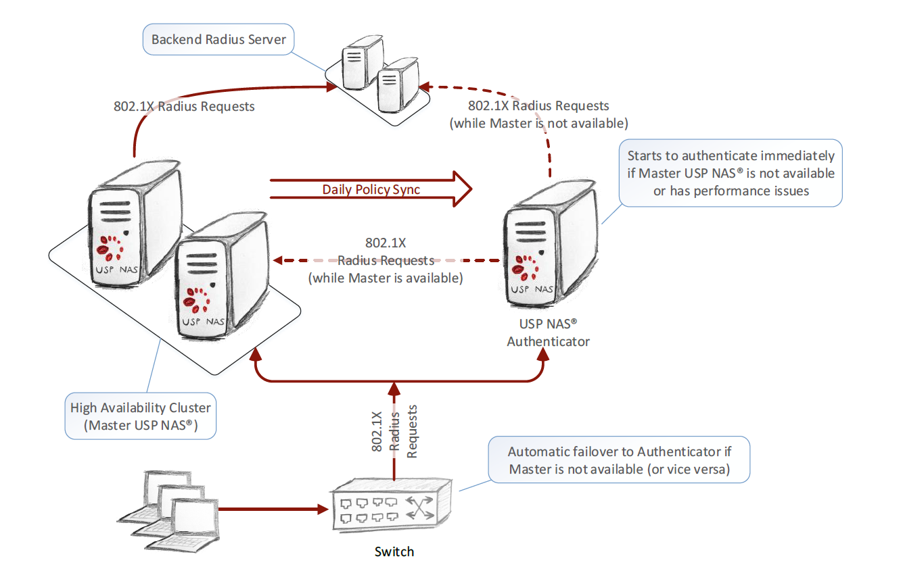

Benutzerhandbuch
Copyright © 2026 United Security Providers AG
Dieses Dokument ist durch das Urheberrecht gemäß den geltenden Gesetzen und internationalen Verträgen geschützt. Kein Teil dieses Dokuments darf in irgendeiner Form vervielfältigt und ohne vorherige schriftliche Genehmigung der United Security Providers AG an Dritte weitergegeben werden.
DIE DOKUMENTATION WIRD „WIE BESEHEN“ BEREITGESTELLT, UND ALLE AUSDRÜCKLICHEN ODER STILLSCHWEIGENDEN ZUSICHERUNGEN UND GEWÄHRLEISTUNGEN, EINSCHLIESSLICH, ABER NICHT BESCHRÄNKT AUF JEGLICHE STILLSCHWEIGENDE GEWÄHRLEISTUNG DER MARKTGÄNGIGKEIT, DER EIGNUNG FÜR EINEN BESTIMMTEN ZWECK ODER DER NICHTVERLETZUNG VON RECHTEN DRITTER, WERDEN IM RAHMEN DES NACH DEN GELTENDEN GESETZEN ZULÄSSIGEN UMFANGS AUSGESCHLOSSEN.
Inhaltsverzeichnis
Wie kann ich das System installieren?
Um das System zu installieren, müssen Sie zuerst Ihre Appliance bzw. Ihre VM so konfigurieren, dass sie von der USP-NAS-.iso-Datei bootet. Wählen Sie nach dem Booten von der .iso-Datei im Bootloader-Menü die Option "Install appliance operating system". Die Installation läuft ohne weitere Benutzerinteraktion ab. Partitionen und Dateisysteme werden erstellt und das USP-NAS-System wird installiert. Anschliessend startet das System automatisch neu und bootet das USP-NAS-Betriebssystem.
Nach Abschluss der Installation wird auf der Konsole eine Anmeldeaufforderung angezeigt. Mit dem Konsolenbenutzer und den folgenden Zugangsdaten können Sie sich am Menü für die Basis-Systemkonfiguration anmelden:
- Benutzername: console
- Passwort: console
Die Netzwerkschnittstelle der Appliance und das Standard-Gateway können über das Konsolenmenü eingestellt werden. Nach Abschluss der initialen Netzwerkkonfiguration können Sie über die konfigurierte IP-Adresse mit einem Webbrowser Ihrer Wahl (empfohlen werden Google Chrome, Mozilla Firefox oder Microsoft Edge) auf das webbasierte USP NAS GUI zugreifen, um mit der Konfiguration der USP-NAS-Applikation fortzufahren.
Wie kann ich das System aktualisieren?
USP NAS bietet die Möglichkeit, Software-Updates über das Web GUI zu installieren (System → Aktualisierung). Sie können das Update-Image direkt über die Dateiauswahl des Web GUI hochladen. Alternativ kann das Image per SFTP mit dem Benutzer transfer hochgeladen werden, dessen Passwort Sie im Web GUI (System → SSH-Zugriff) festlegen können. In diesem Fall muss das Image im Verzeichnis update abgelegt werden. Nachdem Sie das Update-Image ausgewählt und im Web GUI auf die Schaltfläche Aktualisieren geklickt haben, wird das System ohne weiteres Zutun aktualisiert und neu gestartet. Bitte beachten Sie, dass der Update-Vorgang mehrere Minuten dauern kann.
Welche Systemanforderungen gelten für die Installation von NAS?
Wir empfehlen folgende Konfigurationen für einen virtuellen Server:
| 1–5000 Endgeräte | 5000–100000 Endgeräte | |
|---|---|---|
RAM | 8 GB | 16 GB |
Prozessorkerne | 2–4 | 8 |
Festplattengrösse | 50 GB | 140 GB |
Wie richte ich Hochverfügbarkeit (HA) ein?
Um Hochverfügbarkeit einzurichten, benötigen Sie mindestens zwei USP-NAS-Server (im Folgenden Nodes genannt) sowie eine Lizenz für das Modul Authenticator. Einer der Nodes läuft im MASTER-Modus, der bzw. die anderen Nodes im AUTHENTICATOR-Modus. Dies kann im Web GUI unter Konfiguration → HA-Authenticator konfiguriert werden. Die Konfiguration besteht aus zwei Schritten:
AUTHENTICATOR/MASTER konfigurieren
Auf einem Node muss der Modus MASTER eingestellt werden. Anschliessend können alle Authenticator-Instanzen mit ihrer jeweiligen IP-Adresse und ihrem Hostnamen in der Liste AUTHENTICATOR-Instanzen hinzugefügt werden. Auf den anderen Nodes muss der Modus AUTHENTICATOR eingestellt und der Hostname sowie die IP-Adresse des Master-Nodes angegeben werden.
HA-Zertifikat austauschen
Damit die AUTHENTICATOR-Nodes mit dem MASTER kommunizieren können, muss das HA-Zertifikat zwischen den Systemen ausgetauscht werden. Dazu können Sie die Zertifikate jedes Nodes unter Konfiguration → HA-Zertifikat herunterladen. Im selben Menü kann das Zertifikat eines anderen Nodes importiert werden. Mit diesen Funktionen müssen Sie alle AUTHENTICATOR-Zertifikate auf dem MASTER-Node importieren, und das MASTER-Zertifikat muss auf jedem AUTHENTICATOR-Node importiert werden.
Wie sieht die HA-Architektur aus? Wie funktioniert der HA-Modus?
Ein AUTHENTICATOR-Node arbeitet nahezu vollständig unabhängig vom MASTER-System. Standardmässig holt ein AUTHENTICATOR-Node einmal täglich eine Kopie der Policy und des Inventars vom MASTER-System ab. Der AUTHENTICATOR prüft in kurzen, regelmässigen Abständen die Verfügbarkeit des MASTER-Systems und leitet eingehende SNMP-Traps und RADIUS-Anfragen an den Master weiter, solange dieser verfügbar ist. Fällt das Master-System aus (der AUTHENTICATOR-Node erhält keine Antworten vom MASTER) oder ist es überlastet, übernimmt der AUTHENTICATOR sofort die Authentifizierungsfunktion. Sobald der Master wieder online ist, werden Authentifizierungsanfragen wieder an das MASTER-System weitergeleitet.

Wie funktioniert die Synchronisation zwischen MASTER- und AUTHENTICATOR-Systemen?
Die Hochverfügbarkeitsfunktion von USP NAS umfasst eine periodische Synchronisation, bei der ein AUTHENTICATOR-Node die Datenbank vom MASTER-Node kopiert. Diese umfasst unter anderem:
- Kernkonfiguration
- Policy-Konfiguration
- Inventar (Endgeräte, Netzwerkgeräte usw.)
- Zertifikate
- (Geplante) Skripte
- Alarm-/Ereignisweiterleitung
- SMTP-Server und Empfänger von Alarm-E-Mails
Von der Synchronisation ausgenommen sind:
- Verbindungsereignisse
- Ereignisprotokolle
- Monitoring-Schwellenwerte
- Monitoring-Verlauf
- Geplante Berichte
- Geplante Backups
- Dateiserver
- Datenimport-Verlauf
Der Synchronisationszeitplan kann mit einem Cron-Muster konfiguriert werden.
Das USP NAS Web GUI bietet zudem die Möglichkeit, eine Synchronisation manuell auszuführen. Es wird empfohlen, dies nach dem Einrichten eines neuen Authenticator-Nodes zu tun.
Zusätzlich zur Synchronisation der Policy stellt ein AUTHENTICATOR-System eine Funktion bereit, um bestimmte Systemkonfigurationsinformationen vom MASTER auf einen AUTHENTICATOR-Node zu synchronisieren. Die folgenden Konfigurationseinstellungen werden mit der "Konfigurationssynchronisation" synchronisiert:
Monitoring-/Alarmierungseinstellungen
- Syslog-Server
- SNMP-Trap-Ziele
- Lokaler SNMPD-Server
Experteneinstellungen (über CLI gesetzt)
- Zusätzliche Betriebssystembenutzer
- Angepasste Konfiguration für Datenbankzugriff und -performance
Nicht enthalten in der Konfigurationssynchronisation sind unter anderem die folgenden Einstellungen, die auf jeder Instanz manuell gesetzt werden müssen:
- Systemkontakt / Standort
- NTP-Server
- Netzwerkeinstellungen
- Schwellenwerte für das System-Monitoring
- Wo kann ich Benutzer für den Web-GUI- oder Systemzugriff konfigurieren und verwalten?
- Wie können Benutzer lokal verwaltet werden?
- Wie kann ich eine Passwortrichtlinie für lokale Benutzer festlegen?
- Wie konfiguriere ich die LDAP-Authentifizierung für USP NAS?
- Was ist die Multi-Domain-Anmeldung für Web-GUI-Benutzer?
- Wie können USP-NAS-Benutzerrollen im Active Directory abgebildet werden (nur für Web-GUI-Benutzer)?
- Was ist die Domain-SID-Konfiguration in der LDAP-Konfiguration (nur für Systembenutzer)?
- Wie definiere ich LDAP-Anmeldekonfigurationen für Web-GUI-Benutzer?
- Wie definiere ich die LDAP-Anmeldekonfiguration für Systembenutzer?
- Welche Rollen gibt es im Web GUI? Wie funktionieren die Berechtigungen?
- Wie können sich Benutzer per Single Sign-On (OpenID Connect) am Web GUI anmelden?
- Welche Redirect-URI muss beim Identity Provider eingetragen werden?
- Wie registriere ich USP NAS in Microsoft Entra ID?
- Wie konfiguriere ich einen OpenID-Connect-Provider in USP NAS?
- Wie werden OpenID-Connect-Benutzern USP-NAS-Rollen zugewiesen?
- Was kann ich tun
- Was ist der Transfer-Benutzer?
Wo kann ich Benutzer für den Web-GUI- oder Systemzugriff konfigurieren und verwalten?
Es gibt drei Möglichkeiten, Web-GUI- und Systembenutzer zu verwalten:
- Lokal auf der Appliance über die im Web GUI bereitgestellte Benutzerverwaltung
- Über ein Active Directory (AD), um Benutzer per LDAP zu authentifizieren
- Über einen externen Identity Provider per OpenID Connect (Single Sign-On, nur für Web-GUI-Benutzer)
Wie können Benutzer lokal verwaltet werden?
Im Menü Alle Benutzer können Benutzer hinzugefügt, bearbeitet und gelöscht werden. Beim Hinzufügen oder Bearbeiten eines Benutzers können Sie sein Passwort festlegen, bestimmen, ob der Benutzer aktiv ist, und seine Rollen definieren. Wenn Sie Mandanten verwenden, können Sie den Benutzer zudem einem Mandanten zuweisen.
Die Passwörter lokaler Benutzer müssen der konfigurierten Passwortrichtlinie entsprechen, siehe Wie kann ich eine Passwortrichtlinie für lokale Benutzer festlegen?
Wie kann ich eine Passwortrichtlinie für lokale Benutzer festlegen?
Die Passwortrichtlinie für lokale Web-GUI-Benutzer wird im Web GUI unter "Konfiguration → Applikation", Abschnitt "Web-GUI", Feld "Passwortrichtlinie" konfiguriert. Dieser Abschnitt ist nur im Modus "Erweitert" sichtbar, der über den Modus-Umschalter oben auf der Seite ausgewählt werden kann.
Die Richtlinie wird als Liste von key=value-Paaren definiert, die durch Semikolons getrennt sind, z.B.:
minLength=10;maxLength=64;lower=1;upper=1;digit=1;special=1;whitespace=false
Folgende Schlüssel werden unterstützt:
Schlüssel | Beschreibung | Standardwert |
| Minimale Anzahl Zeichen |
|
| Maximale Anzahl Zeichen. |
|
| Minimale Anzahl Kleinbuchstaben ( |
|
| Minimale Anzahl Grossbuchstaben ( |
|
| Minimale Anzahl Ziffern ( |
|
| Minimale Anzahl Sonderzeichen, d.h. alle Zeichen, die weder Buchstabe, Ziffer noch Leerzeichen sind |
|
| Ob Leerzeichen im Passwort erlaubt sind ( |
|
Hinweise zum Format:
- Gross-/Kleinschreibung der Schlüssel wird ignoriert, ebenso Leerzeichen um Schlüssel und Werte.
- Nicht angegebene Schlüssel behalten ihren Standardwert. Jeder Schlüssel darf nur einmal vorkommen.
-
Ein Zeichenklassen-Schlüssel ohne Wert (z.B.
upperstattupper=1) bedeutet "mindestens eines". -
Als Klein- bzw.
Grossbuchstaben zählen nur ASCII-Buchstaben.
Andere Zeichen, wie z.B. Umlaute oder Akzente (
ä,é), zählen als Sonderzeichen. -
Die Richtlinie muss widerspruchsfrei sein:
maxLengthdarf nicht kleiner alsminLengthsein, und die Summe der geforderten Klein-, Grossbuchstaben, Ziffern und Sonderzeichen darfmaxLengthnicht übersteigen.
Eine ungültige Richtlinie (z.B. ein unbekannter Schlüssel oder ein nicht-numerischer Wert) wird beim Speichern der Einstellungen abgelehnt.
Nach der Installation lautet die Standardrichtlinie minLength=8.
Die Richtlinie wird immer dann geprüft, wenn das Passwort eines lokalen Benutzers gesetzt wird:
- Wenn ein Administrator einen neuen Benutzer anlegt oder das Passwort eines bestehenden Benutzers in der Benutzerverwaltung ändert.
- Wenn Benutzer ihr eigenes Passwort in ihrem Benutzerprofil ändern.
Die Regeln der aktiven Richtlinie werden unterhalb der Passwortfelder angezeigt, sodass ersichtlich ist, welche Anforderungen das neue Passwort erfüllen muss. Ein Passwort, das der Richtlinie nicht entspricht, wird abgelehnt.
Anmerkung
Die Passwortrichtlinie wird nur beim Setzen oder Ändern eines Passworts angewendet. Bestehende Passwörter bleiben gültig, auch wenn sie einer neu konfigurierten Richtlinie nicht entsprechen. Für Benutzer, die über LDAP oder OpenID Connect authentifiziert werden, gilt die Richtlinie nicht, da deren Passwörter nicht von USP NAS verwaltet werden.
Wie konfiguriere ich die LDAP-Authentifizierung für USP NAS?
Die LDAP-Anmeldung kann im Web GUI unter "Konfiguration → Benutzerverwaltung", Reiter "LDAP-Server" konfiguriert werden. Dort können zwei Arten von LDAP-Anmeldungen konfiguriert werden:
- LDAP-Anmeldung für Web-GUI-Benutzer (Multi-Domain-Anmeldung verfügbar)
- LDAP-Anmeldung für Systembenutzer (nur Single-Domain-Anmeldung verfügbar)
Was ist die Multi-Domain-Anmeldung für Web-GUI-Benutzer?
Normalerweise wird nur eine Domain benötigt, um die Authentifizierung für Web-GUI-Benutzer bereitzustellen.
Mit der Multi-Domain-Erweiterung ist es möglich, mehrere Domains als Authentifizierungs-Backends zu hinterlegen.
Diese Funktion ist daher nur für Umgebungen mit mehreren Domains relevant.
Die Standardkonfiguration ist diejenige Konfiguration, die zuerst angewendet wird, wenn der Benutzername ohne Domainnamen angegeben wird.
Um sich über eine andere Domain-Konfiguration anzumelden, muss der Benutzer den Servernamen im folgenden Format angeben: servername/username.
Für die Anmeldung von Systembenutzern darf nur eine Konfiguration definiert werden. Das bedeutet, dass Systembenutzer nur von einem dedizierten LDAP-Server verwaltet werden können. Diese Benutzer haben alle Root-Rechte auf dem USP-NAS-System. Die Home-Verzeichnisse der Benutzer auf USP NAS bleiben über Neustarts hinweg nicht erhalten und sollten daher nur zur temporären Ablage von Dateien verwendet werden.
Wie können USP-NAS-Benutzerrollen im Active Directory abgebildet werden (nur für Web-GUI-Benutzer)?
Im Web GUI stehen verschiedene Benutzerrollen zur Verfügung. Um diese Rollen AD-basierten Benutzern zuzuweisen, müssen die verwendeten Rollen im Active Directory als Gruppenobjekte definiert werden. Diese Gruppenobjekte müssen ein Attribut besitzen, das exakt dem jeweiligen Rollennamen entspricht. Dies kann der "cn" der Gruppe oder ein beliebiges anderes Attribut wie "description" sein. Unabhängig davon, welches Attribut gewählt wird, muss der Name des Attributs in der LDAP-Konfiguration unter "LDAP-Name des Rollenattributs" angegeben werden.
Was ist die Domain-SID-Konfiguration in der LDAP-Konfiguration (nur für Systembenutzer)?
In der System-LDAP-Konfiguration gibt es nur eine Rolle, daher müssen keine Gruppen für die Rollen definiert werden. Im Gegensatz zur Web-GUI-Konfiguration muss hier jedoch die Domain-SID angegeben werden. Die Domain-SID entspricht der SID eines beliebigen Objekts (z. B. eines Benutzerobjekts) eines AD ohne den Teil nach dem letzten Bindestrich, d. h.:
-
SID eines Benutzers:
S-1-5-21-3172367666-555659623-114111100-1335 -
Domain-SID:
S-1-5-21-3172367666-555659623-114111100
Die Domain-SID ist für eine erfolgreiche Konfiguration der System-LDAP-Authentifizierung erforderlich. Wenn Sie auf einem Windows-System als Domain-Benutzer angemeldet sind, können Sie die Benutzer-SID mit folgendem Befehl in der Windows-Eingabeaufforderung ermitteln:
wmic useraccount where name='{username}' get sidWie definiere ich LDAP-Anmeldekonfigurationen für Web-GUI-Benutzer?
Aktiv | Legt fest, ob diese LDAP-Konfiguration aktiv ist oder nicht | True / False |
Standard | Wenn true, wird diese Konfiguration als erste versucht, wenn mit dem Benutzernamen kein Servername angegeben wird | True / False |
Name des Servers | Name des Servers; kann bei der Anmeldung angegeben werden, um festzulegen, welche Konfiguration verwendet werden soll | DOMAIN1 |
URL des LDAP-Servers | URL des LDAP-Servers | <ldap://server:port, ldaps://server:port> |
LDAP-DN des Servicebenutzers für den initialen Bind | DN des administrativen Benutzers für den initialen Bind an LDAP, um den sich authentifizierenden Benutzer zu suchen. Leserechte auf das benötigte LDAP-Verzeichnis sind erforderlich. |
|
LDAP-Passwort des Servicebenutzers | Passwort des administrativen Benutzers für den initialen Bind an LDAP |
|
LDAP-DN für die Benutzersuche | Basis-DN, unter dem Benutzer für den initialen Bind gesucht werden. |
|
LDAP-Filter für die Benutzersuche | LDAP-Filter mit dem für den initialen Bind gesuchten Benutzer. |
|
LDAP-DN für die Gruppensuche | Basis-DN, unter dem Rollen (Berechtigungen) gesucht werden |
|
LDAP-Filter für die Gruppensuche | Filter zur Suche der Gruppenobjekte für die Rollen. |
|
LDAP-Name des Rollenattributs | Name des Attributs der Gruppen, das die Rolle definiert. Dies kann der "cn" der Gruppe oder ein beliebiges anderes Attribut wie z. B. "description" sein. Der Wert muss jedoch exakt dem Rollennamen entsprechen (siehe verfügbare Rollen unten) |
|
Wie definiere ich die LDAP-Anmeldekonfiguration für Systembenutzer?
Aktiv | Legt fest, ob diese LDAP-Konfiguration aktiv ist oder nicht | True / False |
Name des Servers | Name des Servers; kann bei der Anmeldung angegeben werden, um festzulegen, welche Konfiguration verwendet werden soll (nur in Multi-Domain-Umgebungen relevant): domain1/username | domain1 |
URL des LDAP-Servers | URL des LDAP-Servers | <ldap://server:port, ldaps://server:port> |
LDAP-DN des Servicebenutzers für den initialen Bind | DN des administrativen Benutzers für den initialen Bind an LDAP, um den sich authentifizierenden Benutzer zu suchen. Leserechte auf das benötigte LDAP-Verzeichnis sind erforderlich. |
|
LDAP-Passwort des Servicebenutzers | Passwort des administrativen Benutzers für den initialen Bind an LDAP |
|
LDAP-DN für die Benutzersuche | Basis-DN, unter dem Benutzer für den initialen Bind gesucht werden. |
|
LDAP-Filter für zugelassene Benutzer | LDAP-Filter für die Benutzer, die berechtigt sind, sich als Systembenutzer anzumelden. Dieser Filter muss exakt die Benutzer erfassen, die sich anmelden dürfen. |
|
LDAP-Domain-SID | SID der konfigurierten LDAP-Domain. |
|
Welche Rollen gibt es im Web GUI? Wie funktionieren die Berechtigungen?
USP NAS verfügt über mehrere Web-GUI-Benutzerrollen mit unterschiedlichen Systemberechtigungen:
| Name | Wert für das LDAP-Rollenattribut | Beschreibung |
|---|---|---|
Helpdesk |
| Benutzer mit der Rolle Helpdesk können den Betriebsstatus von USP NAS prüfen und Ports sperren oder entsperren. Ausserdem können sie nicht autorisierten Endgeräten temporären Zugang gewähren. |
Support |
| Die Rolle Support verfügt über die Berechtigungen des Helpdesks und kann zusätzlich bestehende Regeln ändern. |
Admin |
| Alle Benutzer mit der Rolle Admin haben volle Kontrolle über sämtliche USP-NAS-Funktionen, einschliesslich der Konfiguration des gesamten Regelwerks. Änderungen an der Policy, die ein Administrator vornimmt, werden nicht sofort in die laufende Konfiguration übernommen. Die Änderungen werden nur in einem Policy-Arbeitsbereich (Workspace) vorgenommen. Erst wenn dieser Arbeitsbereich explizit aktiviert wird, werden sie in einer einzigen Transaktion in die laufende Konfiguration kopiert. Daher können nicht mehrere Admin-Benutzer gleichzeitig angemeldet sein. |
Monitoring |
| Die Rolle Monitoring wird typischerweise verwendet, um USP NAS in eine bestehende Monitoring-Umgebung zu integrieren. |
Reporting |
| Die Rolle Reporting dient speziell der Datenauswertung. Benutzer mit dieser Rolle sind berechtigt, gespeicherte NAS-Daten mithilfe der vordefinierten Web-Berichte übersichtlich und konsolidiert darzustellen. |
Benutzeradministration |
| Die Rolle Benutzeradministration dient der Verwaltung von USP-NAS-Benutzern. Nur Benutzer mit dieser Rolle können neue Benutzer hinzufügen sowie bestehende Benutzer ändern oder löschen. |
Nur Lesen |
| Mit der Rolle Nur Lesen kann sich ein Benutzer ausschliesslich mit Leserechten bei USP NAS anmelden. |
Policy nur Lesen |
| Mit der Rolle Policy nur Lesen kann sich ein Benutzer mit Lesezugriff auf die Policy-Ansichten bei USP NAS anmelden. Im Gegensatz zu Admin-Benutzern können mehrere Benutzer mit der Rolle Policy nur Lesen gleichzeitig angemeldet sein. |
REST API |
| Mit der Rolle REST API kann ein Benutzer die REST API verwenden, um Status- und Inventardaten abzurufen. |
Inventar-Importeur |
| Benutzer mit dieser Rolle können Inventardaten per CSV-Datei-Upload oder über die REST API importieren (sofern zusätzlich die Rolle REST API zugewiesen ist) und den Status der letzten Datenimport-Jobs einsehen. |
Wie können sich Benutzer per Single Sign-On (OpenID Connect) am Web GUI anmelden?
Web-GUI-Benutzer können sich über einen externen Identity Provider anmelden, der OpenID Connect (OIDC) unterstützt, z.B. Microsoft Entra ID, Keycloak oder Okta. Für jeden aktivierten Provider zeigt die Login-Seite eine Schaltfläche "Login mit <Provider>". Der Benutzer authentisiert sich beim Identity Provider, der ihn anschliessend mit einem ID-Token zu USP NAS zurückleitet. USP NAS liest die Rollen des Benutzers aus einem Claim dieses Tokens und meldet den Benutzer mit den zugeordneten USP-NAS-Rollen an.
-
Für OIDC-Benutzer wird kein lokaler Benutzer angelegt.
Der im Web GUI und in den Logs angezeigte Benutzername lautet
<Registrierungs-ID>:<Subject>, wobei Subject der vom Identity Provider gesendete Claimsubist. - Benutzer ohne zugeordnete USP-NAS-Rolle können sich nicht anmelden, auch wenn der Identity Provider sie authentisiert hat.
- Die Anmeldung per OIDC ist nur für das Web GUI verfügbar, nicht für Systembenutzer (SSH/Konsole).
- USP NAS muss die Issuer-URI des Identity Providers per HTTPS erreichen können.
OpenID-Connect-Provider werden im Web GUI unter "Konfiguration → Benutzerverwaltung", Reiter "OpenID Connect" verwaltet.
Welche Redirect-URI muss beim Identity Provider eingetragen werden?
Nach der Anmeldung leitet der Identity Provider den Benutzer auf folgende URI von USP NAS zurück:
https://<Hostname von USP NAS>/ng/login/oauth2/code/<Registrierungs-ID>
Beispiel: https://nas.example.com/ng/login/oauth2/code/entra
Der Dialog zum Hinzufügen oder Bearbeiten eines OpenID-Connect-Providers zeigt diese URI im Feld "Redirect-URI" an und kann sie in die Zwischenablage kopieren. Die URI wird aus der Adresse im Browser gebildet. Öffnen Sie das Web GUI deshalb mit dem Hostnamen, den auch die Benutzer für die Anmeldung verwenden. Der Identity Provider vergleicht die Redirect-URI exakt: Schema, Hostname, Pfad und Registrierungs-ID müssen übereinstimmen. Erreichen die Benutzer USP NAS über mehrere Hostnamen, tragen Sie pro Hostname eine Redirect-URI ein.
Wie registriere ich USP NAS in Microsoft Entra ID?
- Öffnen Sie im Microsoft Entra Admin Center "App-Registrierungen" und wählen Sie "Neue Registrierung".
-
Geben Sie einen Namen ein, z.B.
USP NAS, und wählen Sie die unterstützten Kontotypen (meist "Nur Konten in diesem Organisationsverzeichnis"). - Wählen Sie unter "Umleitungs-URI" die Plattform "Web" und tragen Sie die Redirect-URI von USP NAS ein (siehe Welche Redirect-URI muss beim Identity Provider eingetragen werden?).
- Kopieren Sie auf der Seite "Übersicht" der App-Registrierung die "Anwendungs-ID (Client)" und die "Verzeichnis-ID (Mandant)".
- Erstellen Sie unter "Zertifikate & Geheimnisse" einen neuen geheimen Clientschlüssel. Kopieren Sie den Wert sofort, Entra ID zeigt ihn nur einmal an. Notieren Sie das Ablaufdatum.
-
Erstellen Sie unter "App-Rollen" pro USP-NAS-Rolle, die Sie zuweisen möchten, eine App-Rolle, z.B.
NasAdminundNasHelpdesk. Wählen Sie bei "Zulässige Mitgliedstypen" "Benutzer/Gruppen". - Öffnen Sie die Anwendung unter "Unternehmensanwendungen" und weisen Sie unter "Benutzer und Gruppen" den App-Rollen Benutzer oder Gruppen zu.
Fügen Sie anschliessend den Provider in USP NAS mit diesen Werten hinzu:
-
Issuer-URI:
https://login.microsoftonline.com/<Mandanten-ID>/v2.0 - Client-ID: die Anwendungs-ID (Client)
- Client-Secret: der Wert des geheimen Clientschlüssels
- Client-Secret läuft ab am: das Ablaufdatum des geheimen Clientschlüssels
-
Claim:
roles -
Rollenzuordnungen: eine Zuordnung pro App-Rolle, z.B.
NasAdmin→ Admin
Entra ID schreibt die zugewiesenen App-Rollen in den Claim roles des ID-Tokens.
Statt App-Rollen kann auch der Claim groups verwendet werden ("Tokenkonfiguration → Gruppenanspruch hinzufügen").
Die Claim-Werte sind in diesem Fall die Objekt-IDs der Gruppen, nicht deren Namen.
Wie konfiguriere ich einen OpenID-Connect-Provider in USP NAS?
Klicken Sie unter "Konfiguration → Benutzerverwaltung", Reiter "OpenID Connect" auf "OpenID-Connect-Provider hinzufügen" und füllen Sie folgende Felder aus:
Aktiviert | Nur aktivierte Provider werden auf der Login-Seite angezeigt. | Wahr / Falsch |
Anzeigename | Name auf der Login-Schaltfläche "Login mit …". |
|
Registrierungs-ID | Eindeutiger technischer Name des Providers. Er ist Teil der Redirect-URI und kann später nicht geändert werden. Erlaubt sind nur Buchstaben, Ziffern, |
|
Redirect-URI | Nur lesbar. Die beim Identity Provider einzutragende URI, siehe Welche Redirect-URI muss beim Identity Provider eingetragen werden?. |
|
Issuer-URI | Issuer des Identity Providers. USP NAS liest die Endpunkte des Providers von |
|
Client-ID | ID des beim Identity Provider registrierten Clients (Anwendung). | |
Client-Secret | Secret des Clients. Beim Bearbeiten eines Providers das Feld leer lassen, um das bestehende Secret zu behalten. | |
Client-Secret läuft ab am | Optional. Ablaufdatum des Client-Secrets. Ab 30 Tagen vor diesem Datum zeigen die Statusübersicht und die Providerliste eine Warnung an. | |
Scopes | Kommagetrennte Liste der angeforderten Scopes. |
|
Claim | Claim des ID-Tokens, dessen Werte USP-NAS-Rollen zugeordnet werden. Verschachtelte Claims werden mit einem Punkt getrennt. |
|
Rollenzuordnungen | Ordnet einem Wert des Claims eine USP-NAS-Rolle zu. |
|
Melden Sie sich nach dem Speichern ab und prüfen Sie, ob die Login-Seite die neue Schaltfläche anzeigt.
Wie werden OpenID-Connect-Benutzern USP-NAS-Rollen zugewiesen?
Pro Provider wird ein Claim des ID-Tokens gewählt, z.B. roles, dessen Werte USP-NAS-Rollen zugeordnet werden (siehe Welche Rollen gibt es im Web GUI? Wie funktionieren die Berechtigungen?).
Der Claim kann einen einzelnen Wert oder eine Liste von Werten enthalten.
Ein Benutzer erhält alle USP-NAS-Rollen, die einem seiner Claim-Werte zugeordnet sind.
Werte ohne Zuordnung werden ignoriert.
Ist keinem der Werte eine Rolle zugeordnet, wird die Anmeldung abgelehnt.
Beispiele für den Claim:
-
Entra-ID-App-Rollen:
roles(empfohlen) -
Objekt-IDs von Entra-ID-Gruppen:
groups -
Keycloak-Realm-Rollen:
realm_access.roles -
Provider ohne Rolleninformationen, z.B. Google:
email. In diesem Fall benötigt jeder Benutzer, der sich anmelden darf, eine eigene Zuordnung.
Die Rollen werden bei jeder Anmeldung ausgewertet. Änderungen beim Identity Provider werden mit der nächsten Anmeldung des Benutzers wirksam.
Was kann ich tun, wenn die Anmeldung per OpenID Connect fehlschlägt?
-
Der Identity Provider meldet eine ungültige Redirect-URI (Entra ID:
AADSTS50011): Die beim Identity Provider eingetragene Redirect-URI stimmt nicht exakt überein. Kopieren Sie die Redirect-URI aus dem Provider-Dialog in USP NAS und tragen Sie sie beim Identity Provider ein (siehe Welche Redirect-URI muss beim Identity Provider eingetragen werden?). - "Die Anmeldung via Single Sign-On ist fehlgeschlagen": Die Anmeldung wurde abgebrochen, oder USP NAS konnte die Antwort des Identity Providers nicht validieren. Prüfen Sie, ob USP NAS die Issuer-URI erreicht, ob Client-ID und Client-Secret korrekt sind und ob das Client-Secret abgelaufen ist. Details werden in die Logdateien des Web GUI geschrieben.
- "… Ihrem Konto ist jedoch keine NAS-Rolle zugewiesen": Der Benutzer wurde authentisiert, aber keinem seiner Claim-Werte ist eine USP-NAS-Rolle zugeordnet. Prüfen Sie den Claim-Namen, die Rollenzuordnungen und die Rollenzuweisung beim Identity Provider. Die empfangenen Claim-Werte werden ins Warning-Log des Web GUI geschrieben.
- Die Login-Schaltfläche fehlt: Der Provider ist deaktiviert.
Was ist der Transfer-Benutzer?
Der Transfer-Benutzer ist ein Benutzer mit eingeschränktem SSH-Zugriff auf das System. Der Benutzer kann sich per SCP oder SFTP verbinden und auf einige nützliche Verzeichnisse und Dateien wie Backups, Logs, Updates oder Importe zugreifen. Das Standardpasswort des Transfer-Benutzers lautet transfer, es kann jedoch im Web GUI unter System → SSH-Zugriff geändert werden.
USP NAS bietet verschiedene Backup-Möglichkeiten: Backups können manuell im Web GUI unter Betrieb → Backup oder nach einem regelmässigen Zeitplan erstellt werden. Die erzeugten Backup-Dateien können auf USP NAS gespeichert, über den Download-Link auf einen lokalen PC heruntergeladen oder per SFTP/SCP auf einen entfernten Dateiserver kopiert werden.
USP NAS bietet verschiedene Backup-Typen:
Vollständig | Vollständiges Backup aller NAS-Einstellungen und -Konfigurationen (System, Datenbank, Logs und Policies). |
Vollständig – ohne Logdaten | Wie Vollständig, jedoch ohne Logs |
Systemeinstellungen | Es werden nur Systemeinstellungen (z. B. Systemname, Netzwerkeinstellungen usw.) gesichert. |
NAS-Einstellungen | Backup der Kernkonfiguration, der Alarmierungskonfiguration und der Monitoring-Konfiguration |
NAS-Daten | Backup der USP-NAS-Datenbank (Endgeräte, registrierte Endgeräte, Benutzer, Monitoring-Verlauf usw.) |
NAS-Log | Backup der USP-NAS-Logdateien. |
NAS-Policy | Backup des USP-NAS-Regelwerks (Portgruppen, Regeln, Netzwerkgeräte, Netzwerkports usw.) |
Die folgende Übersicht zeigt detailliert, welche Konfigurationsdaten in welchem Backup-Typ enthalten sind:
| Name | Beschreibung | Vollständig | Vollständig (ohne Logs) | Systemeinstellungen | NAS-Einstellungen | NAS-Daten | NAS-Log | NAS-Policy |
|---|---|---|---|---|---|---|---|---|
Konfiguration | Kernkonfiguration, Monitoring-/Alarmierungseinstellungen | x | x | x | ||||
Policy | Netzwerkgeräte, Inventar, Zugriffsprofile, Zugriffsregeln | x | x | x | ||||
DNS-Server | Konfiguration für DNS-Transfer | x | x | |||||
RADIUS-Server | Server für Zertifikatsauthentifizierung | x | x | x | ||||
CA-Zertifikate | Für die Authentifizierung am lokalen FreeRADIUS | x | x | x | x | |||
Serverzertifikate | Für die Authentifizierung am lokalen FreeRADIUS | x | x | x | x | |||
Lizenz | USP-NAS-Lizenz | x | x | x | x | |||
System-LDAP-Konfiguration | Für SSH-Authentifizierung mit LDAP-Benutzer | x | ||||||
Geplante Skripte | Automatische Skripte | x | x | x | ||||
Geplante Berichte | Automatisch geplante Berichte | x | x | x | ||||
Verbindungsereignisse | Verbindungsereignisse | x | x | |||||
Ereignisprotokolle | Strukturierte Ereignisse, protokolliert vom USP NAS Core und vom Web GUI | x | x | |||||
Serverzertifikate | Für SSL/TLS (HTTPS) | x | x | x | ||||
DB-Konfiguration | Konfiguration von Benutzern, Zugriff, Konfiguration | x | x | x | ||||
SFTP-Benutzer | Inventarimport | x | x | x | ||||
SFTP-Transfer-Benutzer | Im GUI für den SFTP-Zugriff konfigurierbar | x | x | x | ||||
Mailserver | Für Alarme verwendet | x | x | x | ||||
Syslog-Server | Für Ereignisse verwendet | x | x | x | ||||
SNMP-Trap-Ziele | Für Alarme verwendet | x | x | x | ||||
SNMP-Daemon-Community | Zur Überwachung des Systems verwendet | x | x | x | ||||
Standort und Kontakt | Nur informativ | x | x | x | ||||
Netzwerkschnittstellen | Konfiguration von IP, Gateway, DNS usw. | x | ||||||
Hostname | Hostname der Appliance | |||||||
Geplante Backups | Konfiguration automatischer Backup-Jobs | x | x | x | ||||
Dateiserver | Entfernte Server für Backups und Berichte | x | x | x | ||||
HA-Konfiguration (Authenticator) | Konfiguration für Master/Authenticator | x | x | x | ||||
NTP-Server | Für die Synchronisation der Systemzeit verwendet | x | x | x |
Wie stelle ich ein Backup wieder her?
Das Wiederherstellen eines Backups umfasst folgende Schritte:
- (Optional) Übertragen Sie die Backup-Datei per SFTP mit dem Benutzer "transfer" auf die Appliance und legen Sie sie im Verzeichnis "backup" ab.
- Wählen Sie im Web GUI unter Betrieb → Wiederherstellung entweder über das Auswahlfeld ein auf dem USP-NAS-System verfügbares Backup aus, oder wählen Sie über die Schaltfläche "Durchsuchen" die entsprechende Backup-Datei auf Ihrem lokalen Laufwerk aus.
- Wählen Sie den Backup-/Wiederherstellungstyp der gespeicherten Backup-Datei aus.
- Klicken Sie auf die Schaltfläche "Starten", um die Wiederherstellung zu starten.
Bitte beachten Sie, dass nur Backups wiederhergestellt werden können, die mit derselben USP-NAS-Version erstellt wurden. Wird ein Backup einer anderen USP-NAS-Version wiederhergestellt, kann dies zu einem inkonsistenten Zustand führen. Ist das Kontrollkästchen "Wiederherstellung erzwingen" im GUI nicht aktiviert, verhindert das System die Wiederherstellung eines Backups, das mit einer anderen Release-Nummer erstellt wurde.
Nach der Wiederherstellung eines Backups startet das System automatisch neu.
Beachten Sie zudem, dass die folgenden Einstellungen beim Wiederherstellen eines vollständigen Backups ignoriert werden:
- System-Hostname
- Einstellungen der Netzwerkschnittstellen (IP-Adresse/Netzmaske)
- Standard-Gateway
Das bedeutet, dass die Wiederherstellung eines vollständigen Backups Ihre aktuellen Netzwerkeinstellungen normalerweise nicht verändert.
Wie plane ich ein automatisches, regelmässiges Backup?
Das automatische Backup kann im Web GUI unter Betrieb→Geplantes Backup geplant werden. Für das automatische Backup stehen dieselben Backup-Optionen zur Verfügung wie für das manuelle Backup.
Als Ausführungsintervall stehen täglich, wöchentlich oder monatlich zur Verfügung. Die automatischen Backups können entweder lokal auf der Appliance oder per SCP/SFTP auf einem entfernten Server gespeichert werden.
Die lokal auf der Appliance gespeicherten Backups erscheinen in der Liste der manuellen Backups und können analog zu den manuellen Backups heruntergeladen werden.
Wichtig: Der Name des automatischen Backups darf keine Leer- oder Sonderzeichen enthalten.
Welche Schnittstellen stellt USP NAS für Umsysteme bereit?
| System | Art der Schnittstelle | Funktionalität des Umsystems |
|---|---|---|
Netzwerkkomponenten (RADIUS-Authentifizierung) | RADIUS-Authentifizierungsserver | USP NAS stellt Netzwerkkomponenten die Funktionalität bereit, Authentifizierungsanfragen von Endgeräten zu prüfen, die sich mit dem Netzwerk verbinden möchten. |
Switches | SNMP-MIBs | USP NAS bietet Funktionen, um Informationen über Switch-Ports und am kabelgebundenen Netzwerk angeschlossene Endgeräte zu erfassen und bereitzustellen. |
DNS-Server | AXFR-Zonentransfer | Der DNS-Zonentransfer erfasst die Zuordnungen von IP-Adressen zu Hostnamen der Endgeräte. Die IP-Adressen sind für die Authentifizierung nicht relevant, werden aber verwendet, um die im USP NAS Web GUI und in Berichten angezeigten Informationen anzureichern. |
Layer-3-Geräte (Router) | Abfrage von ARP-Tabellen (SNMP-Abfragen) | Die ARP-Tabellen von Layer-3-Geräten werden verwendet, um die Zuordnungen von IP-Adressen zu MAC-Adressen der mit dem Netzwerk verbundenen Endgeräte zu ermitteln. |
Endgeräte-Inventarsysteme | Über Push- (CSV) oder Pull-Mechanismen (REST, SQL) | Ein oder mehrere Inventarsysteme können an USP NAS angebunden werden, um Inventarinformationen zu Endgeräten bereitzustellen. |
Netzwerkmanagementsysteme | Über Push- (CSV-Dateien) oder Pull-Mechanismen (REST API, SQL-Abfragen) | Ein oder mehrere Netzwerkmanagementsysteme können Inventardaten der Netzwerkgeräte bereitstellen, die von NAS kontrolliert werden sollen. |
Monitoring (aktiv) | Abfrage des auf USP NAS laufenden SNMP-Dienstes | Ein Monitoring-System kann die SNMP-MIB von USP NAS abfragen, um aktuelle System- und Betriebsdaten zu erhalten. |
TRAP-Ziel (Monitoring passiv) | SNMP-Trap | Ein Monitoring-System kann per SNMP-Trap Ereignisse und Alarme von USP NAS zum System- und Betriebsstatus empfangen. |
E-Mail-Server (Monitoring passiv) | Ein Monitoring-System kann per E-Mail Ereignisse und Alarme von USP NAS zum System- und Betriebsstatus empfangen. | |
SYSLOG-Server (Monitoring passiv) | Syslog | Ein Monitoring-System kann per Syslog Ereignisse und Alarme von USP NAS zum System- und Betriebsstatus empfangen. |
Dateiserver | SCP/SFTP | Ein oder mehrere Dateiserver können verwendet werden, um geplante Backups und geplante Berichte extern zu speichern. |
Wie kann ich Daten in USP NAS importieren?
Die erste Möglichkeit, Daten in USP NAS zu importieren, ist die Import-Schnittstelle. Inventarsysteme und NMS liefern die Daten in Form flacher CSV-Dateien an USP NAS. Die Dateien werden per SFTP (SSH File Transfer Protocol) auf den USP-NAS-Server übertragen. Das ergänzende Dokument "Specification Inventory Import and NMS Import" beschreibt den technischen Ablauf des Importprozesses sowie das Datenformat der zu importierenden CSV-Dateien. CSV-Dateien können auch manuell über das Web GUI unter Betrieb → Importdaten hochladen hochgeladen werden.
Die zweite Möglichkeit für den Datenimport sind geplante Skripte. Diese Skripte können anhand einer Vorlage im Web GUI unter Konfiguration → Geplante Skripte erstellt werden. Anschliessend können Sie das Skript anpassen, um Daten aus beliebigen Quellen zu importieren (z. B. mit Nmap, LDAP, SQL-Server oder HTTP-API).
Welche Hersteller von Netzwerkgeräten werden von USP NAS unterstützt?
USP NAS sollte dank generischer/standardisierter SNMP-Abfragefunktionen viele gängige Switches unterstützen. Bei den folgenden Herstellern und Modellreihen von Switches/Routern/Access Points wurde in Kundenumgebungen ein einwandfreier Betrieb beobachtet:
- Actelis Networks
- Alcatel-Lucent (OmniSwitch)
- Cisco (Catalyst, Business)
- Dell EMC (PowerSwitch, N-Series)
- Extreme Networks
- Fortinet (FortiGate/FortiSwitch)
- H3C
- HP (ProCurve, Aruba, Nortel, 3Com)
- Hirschmann
- Huawei
- Microsens
- onway (Mobile Router)
- Ubiquiti (UniFi)
Wie kann ein Token für die REST-API-Authentifizierung generiert werden?
Die Authentifizierung für die REST API erfolgt über ein benutzerbasiertes Authentifizierungstoken.
Damit für einen Benutzer ein Authentifizierungstoken erstellt werden kann, muss dem Benutzer die Rolle "REST API" zugewiesen sein.
Ein Benutzer mit der Rolle "REST API" kann auf der Seite seines Benutzerprofils im Web GUI ein entsprechendes Token generieren. Dieses Token kann dann zur Authentifizierung verwendet werden, entweder per Cookie oder per HTTP-Header.
Wie sieht eine REST-API-Anfrage aus?
Die URL für Abfragen der REST-API sieht wie folgt aus:
https://{IP}/api/v1/Ein Beispiel für eine Anfrage mit curl, bei der das Token als Cookie gesetzt wird:
curl -b jwttoken=eyJhbG.....sXtRrBRY https://NAS_IP/api/v1/status
Verwendung des Tokens im Authorization-Header:
curl -H "Authorization: Bearer eyJhbG.....sXtRrBRY" https://NAS_IP/api/v1/status
Welche Daten stellt die REST-API bereit?
| Anfrage | Beschreibung |
|---|---|
| Liefert grundlegende Statusinformationen zur USP-NAS-Applikation und zum Betriebssystem. |
| Endgeräte (Endpoints) sind Entitäten, die im Inventar definiert sind oder im Netzwerk durch einen SNMP-Scan oder eine RADIUS-Anfrage erkannt wurden. Bei der Abfrage von Endgeräten können verschiedene Filter auf die einzelnen Attribute angewendet werden. Diese sind in der REST-API-Dokumentation ausführlich beschrieben. |
| Netzwerkgeräte (Netdevices) sind Entitäten von SWITCHES/ROUTERN/WLAN-CONTROLLERN, die im Netzwerkgeräte-Inventar definiert sind oder im Netzwerk durch eine RADIUS-Anfrage erkannt wurden, die aus einem zugelassenen Netzwerkbereich (RADIUS-Subnetz) empfangen wurde. Bei der Abfrage von Netzwerkgeräten können verschiedene Filter auf die einzelnen Attribute angewendet werden. Diese sind in der REST-API-Dokumentation ausführlich beschrieben. |
| Schnittstellen (Interfaces) sind Entitäten von Netzwerkports von Switches, die per SNMP gescannt wurden. Bei der Abfrage von Schnittstellen können verschiedene Filter auf die einzelnen Attribute angewendet werden. Diese sind in der REST-API-Dokumentation ausführlich beschrieben. |
| Datenimporte sind Bulk-Import-Jobs von Daten, welche via API oder als CSV-Datei hochgeladen werden können. Bei der Abfrage der Datenimporte können verschiedene Filter auf die einzelnen Attribute angewendet werden. Diese sind in der REST-API-Dokumentation ausführlich beschrieben. |
Die API stellt ausserdem Methoden bereit, um die Daten im USP-NAS-Inventar mit einem entsprechenden JSON-Payload zu verändern. Für den Aufruf dieser Methoden können zusätzliche Benutzerrollen für den Benutzer erforderlich sein, der den API-Aufruf ausführt.
| Anfrage | Beschreibung | Erforderliche Rolle |
|---|---|---|
| Massenimport von Netzwerkgeräten | Inventar-Importeur |
| Massenimport von Portgruppen-Netzwerkgeräte-Zuordnungen | Inventar-Importeur |
| Massenimport von Netports | Inventar-Importeur |
| Massenimport von Endgeräten | Inventar-Importeur |
| Endgerät sperren | Support |
| Endgerät temporär freigeben | Support |
| Endgerät trennen (via RADIUS Disconnect Message) und neu authentisieren | Support |
Wo finde ich eine detaillierte Dokumentation der REST-API?
Eine detaillierte REST-API-Dokumentation ist im Web GUI verfügbar. Sie kann über den folgenden Link aufgerufen werden (auch über das Hilfemenü erreichbar):
https://[IP]/ng/api-documentation
Beachten Sie, dass der Benutzer zuerst am USP NAS Web GUI angemeldet sein muss, um diese Dokumentation anzuzeigen.
Wie kann ich den DNS-Zonentransfer konfigurieren?
Sie können festlegen, welche DNS-Zonen auf welchen DNS-Servern für den DNS-Zonentransfer berücksichtigt werden sollen. Dies kann unter Konfiguration → DNS-Zonenkonfiguration konfiguriert werden.
Auf dieser Seite können Sie mehrere DNS-Zonen konfigurieren, indem Sie den Namen der DNS-Zone und die IP-Adresse des DNS-Servers angeben.
Bitte beachten Sie, dass eine DNS-Zone mehreren DNS-Server-IPs zugewiesen werden kann.
Wie richte ich das System-Monitoring ein?
Das Monitoring kann unter Konfiguration → Monitoring-Konfiguration konfiguriert werden. Auf dieser Seite können für jeden Sensor Monitoring-Schwellenwerte konfiguriert werden. Liegt ein Messwert ausserhalb des zulässigen Bereichs, wird auf der Statusübersichtsseite ein Alarm angezeigt.
Zudem ist es möglich, für jede Log-Meldung ein externes Alarmierungssystem festzulegen. Dies erfolgt unter Konfiguration → Alarmierungskonfiguration. Ist für eine Meldung nichts konfiguriert, wird die Meldung nur auf den Monitoring-Statusseiten des Web GUI angezeigt.
Welche Vorlagen für geplante Skripte sind verfügbar?
Hier eine Liste der verschiedenen Skriptvorlagen, gruppiert nach Importtyp. Die Parameter der einzelnen Vorlagen und weitere Details sind im Kopf des jeweiligen Skripts dokumentiert.
| Name | Importtyp | Beschreibung |
|---|---|---|
Generic.sh | Generisch | Beispiel für ein Bash-Skript; es schreibt "Hello World" und das aktuelle Datum in eine Ausgabedatei. |
CrlUpdate.sh | Generisch | Bash-Skript, das die Zertifikatssperrlisten (CRL) der angegebenen CAs von einem CRL-Server herunterlädt und für das lokale FreeRADIUS installiert. |
Generic.py | Generisch | Beispiel für ein Python-Skript; es schreibt "Hello World" und das aktuelle Datum in eine Ausgabedatei. |
Generic.jy | Generisch | Beispiel für ein Jython-Skript; es schreibt "Hello World" und das aktuelle Datum in eine Ausgabedatei. |
Logging.jy | Generisch | Beispiel für ein Jython-Skript; es schreibt "Hello World" und das aktuelle Datum ins Log. |
SendMail.jy | Generisch | Beispiel für ein Jython-Skript; es sendet "Hello World" und das aktuelle Datum über die E-Mail-API von USP NAS an die angegebene E-Mail-Adresse. |
MacFloodingCleaner.jy | Generisch | Jython-Skript, das Switch-Ports mit mehr angeschlossenen Endgeräten als einem Grenzwert (Standard: 100) ermittelt, diese bereinigt und optional einen CSV-Bericht dieser Ports per E-Mail versendet. |
QueryToCsvToMail.jy | Generisch | Jython-Skript, das eine SQL-Abfrage als Parameter entgegennimmt, das Ergebnis in eine CSV-Datei schreibt und diese Datei an die als Parameter angegebene E-Mail-Adresse sendet. |
PolicyCheck.jy | Generisch | Beispiel für ein Jython-Skript für eine Policy-Skriptprüfung. Es wird während der Policy-Auswertung ausgeführt und schreibt den Kontext der Policy-Auswertung ins Log. |
PolicyActionWebhook.jy | Generisch | Beispiel für ein Jython-Skript für eine Policy-Skriptaktion. Es wird nach der Policy-Auswertung ausgeführt und sendet den Kontext und das Ergebnis der Policy-Auswertung als JSON an einen HTTP-Endpunkt (Webhook). |
CsvImport.jy | Endgeräteinventar | Jython-Skript, das Endgeräte aus einer Inventar-CSV-Datei im lokalen Dateisystem importiert. |
HttpsFetch.jy | Endgeräteinventar | Jython-Skript, das ein Inventarsystem über HTTP oder HTTPS abfragt. |
InventoryJsonApiFetch.jy | Endgeräteinventar | Jython-Skript, das ein Inventarsystem mit JSON-API über HTTP oder HTTPS abfragt und die Endgeräte importiert. |
MsSqlFetch.jy | Endgeräteinventar | Jython-Skript, das einen MS-SQL-Inventarserver auf einem entfernten System abfragt. Der MS-SQL-JDBC-Treiber wird von USP NAS mitgeliefert. |
MySqlDellKace.jy | Endgeräteinventar | Jython-Skript, das einen MySQL-Inventarserver (z.B. Dell KACE) auf einem entfernten System abfragt. Die MySQL-JDBC-JAR-Datei muss im Java-Classpath abgelegt werden. |
OracleRegister.jy | Endgeräteinventar | Jython-Skript, das einen Oracle-Inventarserver auf einem entfernten System abfragt. Die Oracle-JDBC-JAR-Datei muss im Java-Classpath abgelegt werden. |
CiscoAciEndpointFetch.jy | Endgeräteinventar | Jython-Skript, das die von einer Cisco-ACI-Fabric gelernten Endgeräte über die REST-API des APIC importiert, inklusive ihres ACI-Kontexts (Tenant, EPG, VLAN, Leaf, Port, VM-Informationen) als Endgeräteattribute. |
VMwareVmFetch.jy | Endgeräteinventar | Jython-Skript, das die virtuellen Maschinen eines VMware vCenter als Endgeräte importiert. |
MacAutoImportByVendor.jy | Endgeräteinventar | Jython-Skript, das noch nicht im Inventar registrierte Endgeräte, deren MAC-Hersteller einem regulären Ausdruck entspricht, automatisch importiert. |
NmapImport.jy | Endgeräte-Profiling | Jython-Skript, das eine XML-Ausgabedatei von Nmap auswertet und die Endgeräte mit zusätzlichen Daten/Informationen ergänzt. |
NmapServiceScan.jy | Endgeräte-Profiling | Jython-Skript, das alle Endgeräte mit dem Attribut |
SccmEnrichment.jy | Endgeräte-Profiling | Jython-Skript, das den Verwaltungs- und Compliance-Status der Geräte aus der Standortdatenbank von Microsoft Configuration Manager (SCCM/MECM) liest und als |
IntuneEnrichment.jy | Endgeräte-Profiling | Jython-Skript, das die verwalteten Geräte und deren Compliance-Status aus Microsoft Intune (Microsoft Graph API) liest und als |
NetdeviceJsonApiFetch.jy | Netzgeräte | Jython-Skript, das ein Inventarsystem mit JSON-API über HTTP oder HTTPS abfragt und die Netzgeräte importiert. |
NetdeviceGenerator.jy | Netzgeräte | Beispiel für ein Jython-Skript, das zeigt, wie Netzgeräte programmatisch erzeugt und importiert werden können. |
Ist in einem Netzwerk noch keine Zugriffskontrolle implementiert, empfehlen wir für den Rollout von USP NAS die folgenden Best Practices (weiter unten detailliert beschrieben):
- Netzwerktransparenz: Der erste Schritt besteht in der Regel darin, Transparenz im Netzwerk herzustellen.
- Netzwerkauthentifizierung/Inventar: Im zweiten Schritt wird die Authentifizierung eingeführt. Das Inventar wird schrittweise aufgebaut und anschliessend wird eine restriktive Policy eingeführt.
- Netzwerk-Policy/Automatisierung: In einem dritten Schritt können dann spezifische Policies, dynamische VLAN-Zuweisung und gerätespezifische RADIUS-Attribute zugewiesen werden.
- Welchen Nutzen bringt die Netzwerktransparenz von USP NAS?
- Wie wird Netzwerktransparenz mit USP NAS umgesetzt?
- Wie werden Switches für die Netzwerktransparenz erfasst (Abfrage per SNMP)?
- Wie werden Uplinks (Netports) von Switches definiert?
- Wie wird Netzwerktransparenz mit automatischer Switch-Erkennung konfiguriert?
- Müssen für RADIUS-Authentifizierungsgeräte Netports definiert werden?
- Wie können die Ergebnisse der Netzwerktransparenz geprüft/genutzt werden?
Welchen Nutzen bringt die Netzwerktransparenz von USP NAS?
Netzwerktransparenz ist der erste Schritt bei der Einführung einer Netzwerkzugriffskontrolle. Sie liefert einen Überblick darüber, was wann und wo mit dem Netzwerk verbunden ist und war.
Netzwerktransparenz bildet die Grundlage für wichtige Anwendungsfälle in den Bereichen
- Nachvollziehbarkeit
- Vorfallanalyse
- Bereitstellung wichtiger Daten für den Betrieb von Netzwerk und Endgeräten
Damit lassen sich wichtige Anforderungen aus Sicherheitsaudits erfüllen.
Wie wird Netzwerktransparenz mit USP NAS umgesetzt?
Die Umsetzung der Netzwerktransparenz mit USP NAS ist in der Regel sehr einfach und mit geringem Aufwand möglich. Es gibt zwei mögliche Ansätze zur Umsetzung der Netzwerktransparenz.
- Wenn die Netzwerkkomponenten (Switches) die Abfrage ihrer Bridge-MIBs per SNMP erlauben, ist keine weitere Konfiguration auf den Netzwerkkomponenten nötig. Die Switches müssen jedoch mit IP-Adresse und SNMP-Community-String in USP NAS definiert werden.
- Ist die Abfrage der Bridge-MIBs nicht möglich, muss auf den Switches die RADIUS-MAC-Authentifizierung aktiviert werden. In diesem Fall müssen die Switches jedoch nicht manuell in USP NAS definiert werden, sondern werden automatisch erkannt, sobald sie Authentifizierungsanfragen senden.
Wie werden Switches für die Netzwerktransparenz erfasst (Abfrage per SNMP)?
Switches (Netzwerkgeräte) können entweder über das Web GUI verwaltet oder durch das Hochladen einer CSV-Liste mit IP-Adresse, DNS-Name und SNMP-Lesezugangsdaten erfasst werden. Zusätzlich zur Definition der Switches muss für jedes Gerät mindestens ein Uplink (Netport) definiert werden. Die Uplink-Ports können ebenfalls entweder über das Web GUI erfasst oder über eine CSV-Liste importiert werden.
Wie werden Uplinks (Netports) von Switches definiert?
Netports müssen auf den Switches explizit definiert werden. Der Grund dafür ist, dass MAC-Adressen, die in der Forwarding-Tabelle eines Uplink-Ports eingetragen sind, nicht an diesem Port angeschlossen sind und daher nicht als an diesem Port verbunden betrachtet werden sollen.
Netports können für jeden Switch über den Button "Bearbeiten" im "Ports" Tab auf der "Netzgerätedetails"-Seite definiert werden. Netports können mit einem Häkchen gesetzt oder entfernt werden.
Zur Unterstützung werden die Anzahl der an diesem Port erkannten MAC-Adressen (MAC-Anzahl), der Trunk/STP-Root-Port sowie das benachbarte Gerät angezeigt. Ports, bei denen Nachbarn sichtbar sind, sollten in USP NAS als Netports definiert werden. Mehrere an einem Port angeschlossene Geräte sind ebenfalls ein starkes Indiz für einen Netport.
Sobald ein Netzwerkgerät hinzugefügt und der Netport definiert ist, wird automatisch ein Portscan gestartet. Der Portscan aktualisiert die Details des Netzwerkgeräts sowie die angeschlossenen Endgeräte. Standardmässig wird ein Switch-Scan periodisch in regelmässigen Abständen ausgeführt. Er kann auch manuell im Web GUI ausgelöst werden.
Wenn auf Ihren Switches LLDP (Link Layer Discovery Protocol) aktiviert ist, kann USP NAS die Netports anhand der LLDP-Nachbarinformationen automatisch erkennen. Dieses Verhalten lässt sich unter "Konfiguration → Applikation", Abschnitt "SNMP" konfigurieren.
Wenn Sie die Uplink-Ports Ihres Switches einheitlich kennzeichnen, kann ein regulärer Ausdruck definiert werden, damit USP NAS diese Ports automatisch als Netports kennzeichnet. Dies lässt sich unter "Konfiguration → Applikation", Abschnitt "SNMP" konfigurieren.
Wie wird Netzwerktransparenz mit automatischer Switch-Erkennung konfiguriert?
Die zweite Möglichkeit zur Umsetzung der Netzwerktransparenz besteht darin, die RADIUS-Authentifizierung auf den Netzwerkgeräten zu aktivieren. Standardmässig ist USP NAS so konfiguriert, dass es alle RADIUS-Authentifizierungsanfragen aus dem Netzwerk beantwortet. Geht eine Anfrage von einem Netzwerkgerät ein, das noch nicht im System erfasst ist, wird dieses automatisch als Gerät vom Typ "RADIUS-Authentifizierungsgerät" angelegt. Bei diesem Ansatz müssen die Netzwerkgeräte weder initial noch im laufenden Betrieb explizit erfasst werden. Der Netzwerkbereich (Subnetz), aus dem Switches RADIUS-Anfragen an USP NAS senden dürfen, kann bei Bedarf eingeschränkt werden.
Müssen für RADIUS-Authentifizierungsgeräte Netports definiert werden?
Für RADIUS-Authentifizierungsgeräte, die nach dem Empfang einer Authentifizierungsanfrage automatisch erfasst werden, müssen keine Uplinks erfasst werden.
Wie können die Ergebnisse der Netzwerktransparenz geprüft/genutzt werden?
Das Ergebnis des Netzwerktransparenzmodus ist eine Liste aller während des Betriebs von USP NAS verbundenen Endgeräte. Bei automatischer Erfassung der Netzwerkgeräte wird eine Liste mit Informationen zu allen Netzwerkgeräten erstellt. Bei der Abfrage von Netzwerkgeräten per SNMP stehen nach dem initialen Scan Detailinformationen wie die Beschreibung des Netzwerkgeräts und Portinformationen zur Verfügung.
Alle erfassten Informationen sind im Web GUI verfügbar und können dort gefiltert/exportiert werden. Zusätzlich können die Daten auch über die REST API abgerufen werden.
Die folgende Tabelle listet die jeweiligen Informationen und die Voraussetzungen für deren Erfassung auf:
| Information | Voraussetzung | Detailbeschreibung |
|---|---|---|
Grundlegende Endgeräteinformationen | Das Endgerät ist mit dem kontrollierten Netzwerk verbunden | USP NAS liefert eine Liste aller Endgeräte, die mit einem vom USP-NAS-System kontrollierten Netzwerkgerät verbunden sind. Die grundlegenden Informationen umfassen die MAC-Adresse und den Hersteller des Endgeräts sowie Informationen über den Switch-Port bzw. WLAN-Controller, an dem das Endgerät angeschlossen war. |
IP-Adresse und Hostname des Endgeräts | Das Layer-3-Netzwerkgerät kann per SNMP abgefragt werden und der DNS-Zonentransfer wurde erfolgreich durchgeführt | USP NAS liefert IP-Adresse und Hostname der Endgeräte. |
Switch-Details | Der Switch kann von USP NAS per SNMP abgefragt werden | USP NAS liefert detaillierte Portinformationen zu den Switch-Ports. Dazu gehören insbesondere: ifindex, ifname, ifalias, PVID, Anzahl verbundener MAC-Adressen, Vendor-Announcement-Informationen |
- Welche Voraussetzungen gelten für die Netzwerkauthentifizierung?
- Welche Art von Identität kann für die Authentifizierung verwendet werden?
- Welche Protokolle können für die Authentifizierung verwendet werden?
- Welche Voraussetzungen gelten für die SNMP-Authentifizierung?
- Warum vergehen vom Einstecken eines Kabels bis zum Eintreffen eines SNMP-Verbindungsereignisses mehr als 10 Sekunden?
- Kann USP NAS als RADIUS-Server verwendet werden?
- Wie verwende ich den lokalen RADIUS-Server für die EAP-Authentifizierung?
- Wie verwende ich PEAP/MSCHAPv2 mit Active Directory?
Welche Voraussetzungen gelten für die Netzwerkauthentifizierung?
Der Rollout der Netzwerkauthentifizierung in einem bestehenden Netzwerk muss gut geplant und sorgfältig umgesetzt werden. Voraussetzung für einen erfolgreichen Rollout ist ein sorgfältiger Onboarding-Prozess für alle Endgeräte, die in einem kontrollierten Netzwerk Zugriff haben sollen. Ergebnis des Onboarding-Prozesses ist ein vollständiges Inventar aller Endgeräte. USP NAS bietet leistungsfähige Funktionen, die einen reibungslosen und effizienten Onboarding-Prozess unterstützen.
Welche Art von Identität kann für die Authentifizierung verwendet werden?
Es stehen im Wesentlichen zwei Arten der Authentifizierung zur Verfügung: die MAC-Adresse, mit der ein Endgerät im Netzwerk kommuniziert, oder ein Zertifikat, das das Endgerät bzw. der Benutzer beim Verbinden mit dem Netzwerk vorweist.
Aktuelle Best Practice ist es, Zertifikate für Endgeräte zu verwenden, die in einem Active Directory verwaltet werden. Technisch ist es auch möglich, Zertifikate für andere Endgeräte zu verwenden. Das Problem ist in der Regel die Verwaltung des Zertifikatslebenszyklus für diese Endgeräte. Daher wird für Endgeräte, die nicht in einem Active Directory verwaltet werden, normalerweise die MAC-Adresse als Identität verwendet.
Welche Protokolle können für die Authentifizierung verwendet werden?
Werden Zertifikate als Identität verwendet, muss RADIUS als Authentifizierungsprotokoll eingesetzt werden. Werden ausschliesslich MAC-Adressen als Identität der Endgeräte verwendet, ist es unter Umständen möglich, nur SNMP für die Authentifizierung zu verwenden.
Welche Voraussetzungen gelten für die SNMP-Authentifizierung?
Voraussetzung für die SNMP-Authentifizierung ist, dass auf den Netzwerkgeräten Bridge-MIBs verfügbar sind und Schreibzugriff auf diese Netzwerkgeräte besteht. Zudem kann SNMP nur dann für die Authentifizierung verwendet werden, wenn keine Zertifikate als Identität der Endgeräte eingesetzt werden. Das bedeutet, dass SNMP-Authentifizierung nur in einer Umgebung verwendet werden kann, in der ausschliesslich die MAC-Adresse als Identität dient.
Warum vergehen vom Einstecken eines Kabels bis zum Eintreffen eines SNMP-Verbindungsereignisses mehr als 10 Sekunden?
Bei der SNMP-Authentifizierung senden Switches beim Ein- bzw. Ausstecken von Kabeln Up-/Down-Notification-Traps an USP NAS. Dies löst einen Scan des betreffenden Switch-Ports aus, um festzustellen, welche MAC-Adresse(n) der Switch an dieser Schnittstelle gelernt hat.
Zum Zeitpunkt, an dem ein Link-up-Trap gesendet wird, ist die MAC-Adresse noch nicht in der Bridge-Tabelle vorhanden, da sie dort erst eingetragen wird, wenn der Client das erste Paket gesendet hat. Da die Abfrage der MAC-Adressen beim Switch "relativ" zeitaufwendig ist, erfolgt sie in der Regel erst einige Sekunden später, damit die Wahrscheinlichkeit einer erfolgreichen Abfrage beim ersten Versuch möglichst hoch ist.
Das Timeout kann in der USP-NAS-Applikationskonfiguration in der Kategorie "SNMP" feinjustiert werden. Die entsprechende Einstellung heisst "GetMac Retry Timeouts". In kleineren Umgebungen kann dieser Wert problemlos reduziert werden, in sehr grossen Umgebungen wird dies nicht empfohlen.
Kann USP NAS als RADIUS-Server verwendet werden?
USP NAS kann als RADIUS-Server oder als RADIUS-Proxy konfiguriert werden. Bei der RADIUS-MAC-Authentifizierung übernimmt USP NAS immer die Rolle des RADIUS-Servers. Bei der RADIUS-EAP-Authentifizierung können Sie konfigurieren, ob USP NAS als Proxy fungiert und die EAP-Anfragen an einen Server weiterleitet oder sie lokal verarbeitet.

Die RADIUS-Server können unter Konfiguration → RADIUS-Server-Konfiguration konfiguriert werden. Dort können Sie beliebig viele Server hinzufügen, indem Sie die IP-Adresse, den Port und das Shared Secret angeben.
Wie verwende ich den lokalen RADIUS-Server für die EAP-Authentifizierung?
Um den lokalen RADIUS-Server für die Zertifikatsauthentifizierung zu verwenden, müssen Sie das integrierte Modul "RADIUS-Server" aktivieren. Nach der Aktivierung des Moduls können Sie unter System → SSL-Zertifikatsverwaltung das CA-Zertifikat und das Serverzertifikat hochladen. USP NAS beantwortet RADIUS-Anfragen nun direkt, ohne sie an einen externen RADIUS-Server weiterzuleiten.
Wie verwende ich PEAP/MSCHAPv2 mit Active Directory?
Der lokale RADIUS-Server kann Benutzer mit PEAP/MSCHAPv2 (Benutzername und Passwort) gegen ein Active Directory authentifizieren. Dazu muss USP NAS Mitglied der Active-Directory-Domäne sein. Der Domänenbeitritt ist eine einmalige Einrichtung auf der Kommandozeile der Appliance und kann nicht im Web GUI konfiguriert werden. Die benötigte Software (Samba, Winbind, Kerberos) ist bereits installiert.
Voraussetzungen:
- Der lokale RADIUS-Server ist aktiviert und ein Serverzertifikat ist installiert (siehe Wie verwende ich den lokalen RADIUS-Server für die EAP-Authentifizierung?). Die Clients müssen der CA dieses Serverzertifikats vertrauen, da PEAP damit den Passwortaustausch schützt.
- Die auf USP NAS konfigurierten DNS-Server können die Active-Directory-Domäne inklusive ihrer SRV-Records auflösen.
- Die Systemzeit ist mit den Domänencontrollern synchronisiert (NTP). Kerberos lehnt den Domänenbeitritt ab, wenn die Zeit um mehr als fünf Minuten abweicht.
- Der Hostname von USP NAS hat höchstens 15 Zeichen, da er als Name des Computerkontos im Active Directory verwendet wird.
- USP NAS kann die Domänencontroller auf den Ports DNS (53), Kerberos (88), LDAP (389), SMB (445) und Kerberos-Passwortänderung (464) erreichen.
- Ein Active-Directory-Konto, das Computer zur Domäne hinzufügen darf.
Ersetzen Sie in den folgenden Beispielen EXAMPLE.COM durch den DNS-Namen Ihrer Active-Directory-Domäne (in Grossbuchstaben) und EXAMPLE durch deren NetBIOS-Domänennamen.
Melden Sie sich per SSH als Systembenutzer (siehe Systembenutzer) auf USP NAS an und führen Sie die folgenden Schritte aus.
Kerberos in
/etc/krb5.confkonfigurieren:[libdefaults] default_realm = EXAMPLE.COM dns_lookup_realm = false dns_lookup_kdc = trueSamba in
/etc/samba/smb.confkonfigurieren:[global] workgroup = EXAMPLE realm = EXAMPLE.COM security = ads winbind use default domain = yes ntlm auth = mschapv2-and-ntlmv2-only idmap config * : backend = tdb idmap config * : range = 10000-99999 kerberos method = secrets and keytabDer Domäne beitreten. Geben Sie bei der Aufforderung das Passwort des Active-Directory-Kontos ein:
kinit Administrator@EXAMPLE.COM net ads join -k kdestroy
Den Samba-Dienst aktivieren und starten:
rc-update add samba default rc-service samba start
Die Verbindung zum Active Directory testen, wobei
jdoeundPassword1durch ein Testkonto zu ersetzen sind:wbinfo -t # prüft das Trust-Secret des Computerkontos wbinfo -u | head # listet Domänenbenutzer auf wbinfo -a 'jdoe%Password1' # testet Klartext- und Challenge/Response-Authentifizierung ntlm_auth --request-nt-key --username=jdoe --password='Password1'
Alle Befehle müssen erfolgreich sein, bevor Sie fortfahren.
- Im Web GUI unter Konfiguration → Applikation im Abschnitt "RADIUS/802.1X" die Option "PEAP/MSCHAPv2 aktivieren" einschalten. Die Einstellungen speichern und den USP NAS Core-Dienst neu starten, wenn Sie dazu aufgefordert werden.
Der RADIUS-Server akzeptiert nun zusätzlich zu EAP-TLS auch PEAP/MSCHAPv2. Konfigurieren Sie die 802.1X-Supplicants der Clients für PEAP mit EAP-MSCHAPv2 als innere Methode.
Welche Arten von Onboarding-Prozessen für Endgeräte bietet USP NAS?
Grundsätzlich gibt es zwei Möglichkeiten für ein effizientes Onboarding von Endgeräten: Das System verfügt über einen automatischen Onboarding-Mechanismus für Geräte, die sich im Netzwerk mit einem Zertifikat authentifizieren, sowie über Mechanismen für das Massen-Onboarding von Geräten, die sich im Netzwerk über ihre MAC-Adresse authentifizieren. Diese Geräte können nach bestimmten Eigenschaften gefiltert und anschliessend als ganze Liste importiert werden. Dabei können den Geräten auch Attribute zugewiesen werden, die ihren Typ bzw. ihre Klassenzugehörigkeit bestimmen.
Wie funktioniert das Onboarding für Endgeräte, die sich mit einem Zertifikat authentifizieren?
Für Geräte, die sich mit einem Zertifikat am Netzwerk anmelden, ist das Onboarding äusserst einfach – es erfolgt automatisch, sobald sie sich zum ersten Mal mit ihrem Zertifikat bei USP NAS anmelden. Die Geräte werden mit dem CN des Zertifikats und der aktuell verwendeten MAC-Adresse im lokalen Inventar registriert. Meldet sich ein Endgerät mit demselben Zertifikat einmal über WLAN und einmal über LAN an, wird für jeden Verbindungstyp ein separater Eintrag erstellt.
Wie funktioniert das Onboarding für Endgeräte, die sich über ihre MAC-Adresse authentifizieren?
Für Geräte, die sich im Netzwerk über ihre MAC-Adresse authentifizieren sollen, gibt es spezielle Onboarding-Funktionen, die diesen Prozess so effizient wie möglich gestalten. Voraussetzung für das Onboarding über die MAC-Adresse ist, dass die Geräte bereits einmal vom USP-NAS-System per SNMP-Scan erfasst wurden oder der Switch bereits eine RADIUS-Authentifizierungsanfrage für die MAC-Adresse gesendet hat.
Die Geräte können dann nach bestimmten Eigenschaften (Hersteller, Anschlusspunkt, Verbindungszeitpunkt usw.) gefiltert und als Liste importiert werden. Während des Imports können den Geräten Attribute zugewiesen werden, die den Typ bzw. die Klasse der Geräte bestimmen. Diese zugewiesenen Attribute können später verwendet werden, um die Policies zu definieren, die einem Endgerät beim Verbinden mit dem Netzwerk zugewiesen werden.
- Wie funktioniert die Policy-Verwaltung?
- Welche Zugriffsentscheidungen kann eine Policy anwenden?
- Welche Bedingungen können in einem Endgeräte-Profil verwendet werden?
- Können für verschiedene Standorte unterschiedliche Policies angewendet werden?
- Können für verschiedene Endgerätetypen unterschiedliche Policies angewendet werden?
- Was passiert
- Wie kann ich das System so konfigurieren
- Gibt es Best Practices für den Policy-Rollout?
- Werden Änderungen an der Policy sofort aktiviert?
- Wie kann ich herausfinden
- Ist es möglich
Wie funktioniert die Policy-Verwaltung?
Die Policy-Verwaltung basiert auf drei Bausteinen:
- Richtliniengruppe
- Eine Richtliniengruppe legt fest, wo eine Policy gilt. Jedes Netzgerät (Switch, WLAN-Controller) ist genau einer Richtliniengruppe zugewiesen. Bei Bedarf können einzelne Switch-Ports einer anderen Richtliniengruppe zugewiesen werden als ihr Netzgerät. Es gibt immer eine Standard-Richtliniengruppe ("Global"), welche alle Netzgeräte enthält, die nicht explizit einer anderen Gruppe zugewiesen sind.
- Endgeräte-Profil
- Ein Endgeräte-Profil beschreibt anhand einer Reihe von Bedingungen, welche Endgeräte gemeint sind (z.B. Authentifizierungsart, Inventarstatus, Gerätetyp, Zertifikat, Endgerät-Attribute). Endgeräte-Profile werden global definiert und können in beliebig vielen Richtliniengruppen wiederverwendet werden.
- Richtlinienregel
- Eine Regel verknüpft innerhalb einer Richtliniengruppe ein Endgeräte-Profil mit einer Aktion. Die Aktion legt fest, ob die Verbindung akzeptiert oder abgelehnt wird und welches VLAN, welche ACL oder welche RADIUS-Attribute an das Netzgerät gesendet werden. Die Regeln einer Richtliniengruppe sind nach Priorität geordnet, die per Drag & Drop geändert werden kann.
Wenn sich ein Endgerät authentifiziert, wertet USP NAS die Policy wie folgt aus:
- Die Richtliniengruppe des Anschlusspunkts wird ermittelt: die Richtliniengruppe des Switch-Ports, falls eine gesetzt ist, andernfalls die Richtliniengruppe des Netzgeräts.
- Die Regeln dieser Richtliniengruppe werden von oben (höchste Priorität) nach unten ausgewertet. Die erste Regel, deren Endgeräte-Profil auf das Endgerät zutrifft, wird angewendet; alle nachfolgenden Regeln werden ignoriert.
- Trifft keine Regel der Richtliniengruppe zu, werden die Regeln der Standard-Richtliniengruppe auf die gleiche Weise ausgewertet (siehe Was passiert, wenn keine Regel zutrifft?).
Anmerkung
Die Policy-Verwaltung gilt für die RADIUS-Authentifizierung (MAC-Authentifizierung und 802.1X/EAP). Bei EAP wird die eigentliche Authentifizierung durch den RADIUS-Server durchgeführt (lokaler FreeRADIUS oder ein externer RADIUS-Server). Die Policy wird erst ausgewertet, nachdem dieser RADIUS-Server die Authentifizierung akzeptiert hat. Lehnt er die Authentifizierung ab, wird die Verbindung unabhängig von der Policy abgelehnt.
Welche Zugriffsentscheidungen kann eine Policy anwenden?
Die Aktion einer Regel legt fest, wie die Zugriffsentscheidung auf dem Netzgerät durchgesetzt wird:
| Aktion | Zweck |
|---|---|
Verbindung ablehnen | Das Netzgerät erhält einen RADIUS-Reject, und das Endgerät erhält keinen Netzwerkzugriff. |
Verbindung akzeptieren | Das Endgerät erhält Netzwerkzugriff. Ohne weitere Einstellungen verbleibt das Endgerät im VLAN, das auf dem Switch-Port bzw. der SSID konfiguriert ist. |
VLAN zuweisen | Das Endgerät wird in das angegebene VLAN verschoben. Es kann sowohl die VLAN-ID als auch der VLAN-Name verwendet werden. |
ACL-Filter-ID | Der Name einer auf dem Netzgerät definierten Access Control List, gesendet als RADIUS-Attribut |
RADIUS-Attribute | Beliebige zusätzliche (auch herstellerspezifische) RADIUS-Attribute, z.B. um ein Session-Timeout, eine Downloadable ACL oder eine Portgeschwindigkeit zu setzen. Welche Attribute unterstützt werden, hängt von den Fähigkeiten der Netzgeräte (Switches, WLAN-Controller) ab. |
Skript ausführen | Ein Skript, das nach der Zugriffsentscheidung im Hintergrund ausgeführt wird, z.B. um ein Drittsystem per Webhook zu benachrichtigen. Das Skript hat keinen Einfluss auf die Zugriffsentscheidung. |
VLAN, ACL und RADIUS-Attribute können nur gesetzt werden, wenn die Verbindung akzeptiert wird.
Das VLAN und die Werte der RADIUS-Attribute können den Platzhalter {attribute:key} enthalten, der durch den Wert des Endgerät-Attributs key ersetzt wird.
Damit kann beispielsweise das VLAN jedes Endgeräts als Endgerät-Attribut hinterlegt und eine einzige Regel für alle diese Endgeräte verwendet werden.
Welche Bedingungen können in einem Endgeräte-Profil verwendet werden?
Ein Endgeräte-Profil trifft zu, wenn alle seine Bedingungen erfüllt sind. Leer gelassene Bedingungen werden nicht geprüft. Textbedingungen sind reguläre Ausdrücke, die auf den gesamten Wert zutreffen müssen.
| Bedingung | Beschreibung |
|---|---|
Inventarisiert | Ob das Endgerät im Endgeräte-Inventar erfasst und autorisiert ist ("Inventarisiert & autorisiert", "Nicht inventarisiert oder nicht autorisiert" oder "Beliebig"). Endgeräte mit abgelaufenem Gültigkeitsdatum gelten als nicht inventarisiert. |
Authentifizierung | MAC-Authentifizierung, EAP-Authentifizierung oder beliebig. |
Netzwerktyp | Ethernet oder Wireless. |
MAC-Adresse, MAC-Hersteller | Nur bei MAC-Authentifizierung. |
EAP-Methode, EAP-Benutzername | Nur bei EAP-Authentifizierung. Die EAP-Methode kann EAP-TLS oder PEAP sein. |
Zertifikat-Subjekt CN, Zertifikat-Aussteller CN | Nur bei EAP-TLS und nur bei Verwendung des lokalen RADIUS-Servers. |
WLAN-SSID, WLAN-AP MAC-Adresse | Nur bei Wireless-Verbindungen. |
Geräteklasse, Gerätetyp | Nur bei inventarisierten Endgeräten. |
Endgerät-Attribute | Ein oder mehrere Endgerät-Attribute mit je einem regulären Ausdruck, z.B. Attribute, die aus einem Asset-Management-System importiert, von einem geplanten Skript gesetzt oder aus dem Client-Zertifikat übernommen wurden. |
Im Verzeichnis prüfen | Nur bei EAP-TLS. Der Computer bzw. Benutzer des Client-Zertifikats muss im Verzeichnis (Active Directory) existieren und aktiviert sein. Optional können die Mitgliedschaft in mindestens einer der angegebenen Gruppen (inklusive verschachtelter Gruppen), die Zugehörigkeit zu einer Organisationseinheit (OU) sowie weitere Verzeichnis-Attribute geprüft werden. Ist das Verzeichnis nicht erreichbar, trifft das Endgeräte-Profil nicht zu. |
Skript ausführen | Ein Skript, das entscheidet, ob das Endgeräte-Profil zutrifft. |
USP NAS enthält drei vordefinierte Endgeräte-Profile, die nicht gelöscht werden können: "Inventarisiert & autorisiert", "Nicht inventarisiert oder nicht autorisiert" und "Jedes Endgerät". Das Profil "Jedes Endgerät" trifft auf alle Endgeräte zu und wird deshalb typischerweise als letzte Regel einer Richtliniengruppe verwendet (Schlussregel).
Können für verschiedene Standorte unterschiedliche Policies angewendet werden?
Ja, Policies pro Standort werden mit Richtliniengruppen definiert. Beispielsweise kann für jeden Standort eine Richtliniengruppe erstellt werden, der die Netzgeräte dieses Standorts zugewiesen werden. Jede Richtliniengruppe hat ihre eigenen Regeln, sodass dasselbe Endgeräte-Profil an jedem Standort zu einem anderen VLAN oder einer anderen Zugriffsentscheidung führen kann.
Einzelne Switch-Ports können einer anderen Richtliniengruppe zugewiesen werden als ihr Netzgerät, z.B. für Sitzungszimmer oder spezielle Bereiche innerhalb eines Gebäudes. Endgeräte, die an Netzgeräten ohne spezifische Richtliniengruppe angeschlossen sind, werden von der Standard-Richtliniengruppe "Global" behandelt.
Können für verschiedene Endgerätetypen unterschiedliche Policies angewendet werden?
Ja, Endgerätetypen werden mit Endgeräte-Profilen unterschieden. Ein Profil kann beispielsweise alle Drucker anhand ihres Gerätetyps, alle Firmencomputer anhand ihres Client-Zertifikats oder ihrer Gruppenmitgliedschaft im Verzeichnis oder alle Geräte mit einem bestimmten Endgerät-Attribut erfassen. Eine Regel in der Richtliniengruppe weist dann jedem Profil die gewünschte Aktion (z.B. VLAN) zu.
Da die erste zutreffende Regel angewendet wird, müssen spezifischere Profile oberhalb von allgemeineren platziert werden.
Was passiert, wenn keine Regel zutrifft?
Trifft keine Regel der Richtliniengruppe des Endgeräts zu, werden die Regeln der Standard-Richtliniengruppe "Global" ausgewertet. Es genügt daher, in einer standortspezifischen Richtliniengruppe nur die abweichenden Regeln zu definieren; alle anderen Endgeräte werden von der Standard-Richtliniengruppe behandelt.
Die Standard-Richtliniengruppe enthält immer Regeln für die vordefinierten Endgeräte-Profile "Inventarisiert & autorisiert" und "Nicht inventarisiert oder nicht autorisiert", die zusammen jedes Endgerät abdecken. Diese Regeln können nicht gelöscht werden, und keine andere Regel kann unterhalb von ihnen platziert werden. Trifft überhaupt keine Regel zu, wird die Verbindung akzeptiert.
Tritt bei der Auswertung der Policy ein Fehler auf, wird die Verbindung abgelehnt.
Wie kann ich das System so konfigurieren, dass kein Gerät gesperrt wird?
Ob unbekannte Endgeräte gesperrt werden, wird durch die Standardregeln der Standard-Richtliniengruppe "Global" festgelegt. Der daraus resultierende Betriebsmodus wird auf der Policy-Seite angezeigt:
| Betriebsmodus | Beschreibung |
|---|---|
Alle erlauben | Die Standardregel für "Nicht inventarisiert oder nicht autorisiert" akzeptiert die Verbindung mit derselben Aktion wie die Regel für "Inventarisiert & autorisiert" (oder die Standardregel "Jedes Endgerät" akzeptiert die Verbindung). Unbekannte Endgeräte erhalten denselben Zugriff wie inventarisierte Endgeräte. Dieser Modus kann während des Rollouts zur passiven Überwachung des Netzwerks verwendet werden (Monitoring-Modus). |
Restriktiv | Die Standardregel für "Nicht inventarisiert oder nicht autorisiert" lehnt die Verbindung ab oder akzeptiert sie mit einer anderen Aktion, z.B. durch Zuweisung eines Quarantäne- oder Gäste-VLANs. Im zweiten Fall wird die Verbindung zwar akzeptiert, aber als "Blockiert" geloggt, sodass unbekannte Endgeräte in den Verbindungsereignissen weiterhin erkennbar sind. |
Gibt es Best Practices für den Policy-Rollout?
Es wird ein schrittweises Vorgehen empfohlen:
- Die Endgeräte ins Inventar aufnehmen und bei Bedarf Geräteklassen, Gerätetypen oder Endgerät-Attribute zuweisen (siehe Welche Arten von Onboarding-Prozessen für Endgeräte bietet USP NAS?).
- Die Standard-Richtliniengruppe im Modus "Alle erlauben" belassen und die Verbindungsereignisse auf noch nicht inventarisierte Endgeräte prüfen.
- Eine Richtliniengruppe für einen Pilotbereich erstellen und dieser einige Netzgeräte (oder Switch-Ports) zuweisen.
- Die Endgeräte-Profile und Regeln für die Pilot-Richtliniengruppe erstellen, abgeschlossen durch eine Regel, die unbekannte Endgeräte ablehnt oder in ein Quarantäne-VLAN verschiebt.
- Das Ergebnis anhand der Verbindungsereignisse des Pilotbereichs überprüfen.
- Weitere Netzgeräte der Richtliniengruppe zuweisen oder die Regeln in die Standard-Richtliniengruppe übernehmen, bis das gesamte Netzwerk abgedeckt ist.
Werden Änderungen an der Policy sofort aktiviert?
Ja, Änderungen an Richtliniengruppen, Regeln und Endgeräte-Profilen werden wirksam, sobald sie gespeichert sind. Es gibt keinen separaten Aktivierungsschritt.
Die neue Policy wird bei der nächsten Authentifizierung eines Endgeräts angewendet. Bereits verbundene Endgeräte behalten ihren aktuellen Zugriff, bis sie sich erneut authentifizieren, z.B. nach Ablauf des RADIUS-Session-Timeouts oder nach einem erneuten Verbindungsaufbau. Um eine Policy-Änderung sofort anzuwenden, kann eine erneute Authentifizierung erzwungen werden, indem die Endgeräte getrennt werden:
- Im Web GUI die Endgeräte in der Endgeräte-Übersicht auswählen und in den Massenaktionen "Trennen" wählen.
- Über die REST-API kann ein Endgerät anhand seiner MAC-Adresse oder IP-Adresse getrennt werden.
Für das Trennen von Endgeräten muss die Applikationseinstellung "Das Senden von RADIUS-Disconnect-Paketen erlauben" aktiviert sein, und die Netzgeräte müssen so konfiguriert sein, dass sie RADIUS-Disconnect-Anfragen (RFC 5176) von USP NAS akzeptieren.
Wie kann ich herausfinden, weshalb ein Endgerät eine bestimmte Policy erhalten hat?
Jedes Verbindungsereignis zeigt die angewendete Richtliniengruppe und das angewendete Endgeräte-Profil an. Zusätzlich listet die Profil-Auswertung jedes geprüfte Endgeräte-Profil zusammen mit der Bedingung auf, die nicht erfüllt war (z.B. die Gruppenmitgliedschaft im Verzeichnis).
Ungültige Policy-Einstellungen (z.B. ein ungültiger Wert eines RADIUS-Attributs) werden als Ereignis protokolliert und als Alarm im Dashboard angezeigt.
Ist es möglich, die Kontrolle des Netzwerks zu deaktivieren?
Um allen Endgeräten Zugriff zu gewähren und die RADIUS-Authentifizierung dennoch aktiv zu lassen, die Standard-Richtliniengruppe auf "Alle erlauben" setzen und sicherstellen, dass keine andere Richtliniengruppe ablehnende Regeln enthält.
Um die Netzwerkzugriffskontrolle vollständig zu deaktivieren, muss die RADIUS-Authentifizierung auf den Netzgeräten (Switches, WLAN-Controller) deaktiviert werden. Da die Netzgeräte für jede Authentifizierung eine RADIUS-Antwort benötigen, würde ein blosses Stoppen von USP NAS dazu führen, dass die Endgeräte den Netzwerkzugriff verlieren.
Wie funktioniert das Reporting?
USP NAS verfügt über eine integrierte Reporting-Funktion, welche die Auswertung der erfassten Daten mithilfe vordefinierter Web-Berichte abdeckt. Je nach Benutzerrolle stehen unterschiedliche Berichte zur Verfügung. Die Berichte sind standardmässig in den Formaten PDF, CSV und HTML verfügbar.
Berichte können über das Menü Reporting → Neuen Bericht erstellen generiert werden. Je nach Bericht müssen für die Erstellung unterschiedliche Parameter gesetzt werden, wie beispielsweise der Auswertungszeitraum.
Zusätzlich zur manuellen Erstellung über das Web GUI kann ein Bericht als geplanter Bericht definiert werden, der periodisch generiert wird. Vom Scheduler generierte Berichte werden gespeichert und stehen im Web GUI zur Anzeige und zum Download zur Verfügung. Sie können auch an beliebige E-Mail-Adressen gesendet oder auf einem entfernten Dateiserver gespeichert werden.
- Welchen Zweck hat die interne Zertifikatsverwaltung?
- Wie wird das Serverzertifikat eingerichtet?
- Wie kann das Serverzertifikat erneuert werden?
- Welche Voraussetzungen gelten für die Zertifikatsauthentifizierung von Endgeräten?
- Wie werden CA-Zertifikate für Umsysteme installiert?
- Wie werden CA-Zertifikate für die RADIUS-Authentifizierung installiert?
Welchen Zweck hat die interne Zertifikatsverwaltung?
Die interne Zertifikatsverwaltung dient der Verwaltung des Serverzertifikats und der CA-Zertifikate. Die CA-Zertifikate werden verwendet, um Umsysteme zu authentifizieren und Zertifikate von Endgeräten zu prüfen.
Mit der internen Zertifikatsverwaltung können keine Endgerätezertifikate erstellt werden.
Wie wird das Serverzertifikat eingerichtet?
Ein Serverzertifikat, das für den Webserver (HTTPS) und den RADIUS-Server benötigt wird, ist standardmässig auf dem System installiert. In einer Produktivumgebung sollte es durch ein von einer vertrauenswürdigen Unternehmens-CA signiertes Zertifikat ersetzt werden.
In einem ersten Schritt können Sie in den "Zertifikatsdetails" des Serverzertifikats den Punkt "Zertifikat neu generieren" aufrufen. Dort können die gewünschten Eigenschaften für den CSR festgelegt werden. Der CSR kann dann unter "Zertifikat erneuern" kopiert werden, um das Zertifikat von der Unternehmens-CA ausstellen zu lassen und es anschliessend auf USP NAS zu hinterlegen.
Wie kann das Serverzertifikat erneuert werden?
In den "Zertifikatsdetails" des Serverzertifikats kann der CSR unter "Zertifikat erneuern" kopiert werden, um von der Unternehmens-CA ein neues Zertifikat ausstellen zu lassen und es anschliessend auf USP NAS zu hinterlegen.
Welche Voraussetzungen gelten für die Zertifikatsauthentifizierung von Endgeräten?
Für die Zertifikatsauthentifizierung von Endgeräten müssen folgende Voraussetzungen an die Zertifikatsverwaltung erfüllt sein:
- Das Serverzertifikat muss von einer CA ausgestellt sein, die auch im Truststore der Endgeräte vorhanden ist.
- Alle CAs der Endgeräte, die sich authentifizieren sollen, müssen in der Zertifikatsverwaltung von USP NAS als CAs vom Typ "CA-Zertifikat für RADIUS-Authentifizierung" hinterlegt sein.
Wie werden CA-Zertifikate für Umsysteme installiert?
Ein CA-Zertifikat für Umsysteme wird installiert, indem ein neues CA-Zertifikat in der Zertifikatsverwaltung von USP NAS installiert und anschliessend in den Zertifikatsdetails das Flag "CA-Zertifikat für Umsysteme" gesetzt wird.
Wie werden CA-Zertifikate für die RADIUS-Authentifizierung installiert?
Ein CA-Zertifikat für die RADIUS-Authentifizierung wird installiert, indem ein neues CA-Zertifikat in der Zertifikatsverwaltung von USP NAS installiert und anschliessend in den Zertifikatsdetails das Flag "CA-Zertifikat für RADIUS" gesetzt wird.
Wie kann der Gesamtstatus des Systems geprüft werden?
Durch Klicken auf den Menüeintrag Status → Status wird die USP NAS Core-Statusübersicht angezeigt. Die wichtigsten USP-NAS-Statusinformationen werden in der Core-Statusübersicht auf einen Blick dargestellt. Stimmt etwas mit der Hardware, dem Betriebssystem oder der USP-NAS-Applikation nicht, wird der entsprechende Status in der Benachrichtigungstabelle rot angezeigt. Der Abschnitt "Ereignisse und NAS-Tasks" zeigt beispielsweise, wie viele Traps empfangen wurden, sowie den Zeitstempel des letzten Inventarimports. Um weitere Informationen zum Status von USP NAS, des Betriebssystems oder der Hardware zu erhalten, können Sie die weiteren Untermenüs unter Statistiken/Reporting verwenden. Dort sehen Sie die Details zu den Alarmen, und der Status wird in Form von Grafiken dargestellt.
Benutzer mit der Rolle Monitoring haben Zugriff auf das Menü Health-Check. Diese Seite zeigt die Trap-Verarbeitung und den Status des USP-NAS-Daemons an.
Fehler werden auf der Statusübersichtsseite angezeigt. Der Status von Hardware, Betriebssystem oder USP-NAS-Applikation wechselt auf Rot, und Sie können auf das entsprechende Element klicken, um weitere Informationen zum Fehler zu erhalten. Dort sehen Sie eine Benachrichtigungstabelle mit dem Fehlertext. Durch Klicken auf die Fehlernummer können Sie die detaillierten Fehlertexte anzeigen.
Um im Fehlerfall per E-Mail informiert zu werden oder ein Alarmsystem zu benachrichtigen, können Sie unter Konfiguration → Alarmierungskonfiguration für jeden Fehler das Alarmierungssystem konfigurieren.
Wie kann das System nach einem Ausfall neu installiert werden?
Wenn Sie über ein aktuelles Backup des Systems verfügen, können Sie das System wie unter Wie kann ich das System installieren? beschrieben neu installieren und nach der Installation das Backup wiederherstellen.
Ist kein aktuelles Backup verfügbar, Sie verfügen aber über einen zweiten Node, der für HA verwendet wird, können Sie das System mit folgenden Schritten wiederherstellen:
- Installieren Sie das USP-NAS-System
- Konfigurieren Sie das neu installierte System als Authenticator und legen Sie den bereits installierten Node als Master fest
- Starten Sie eine Authenticator-Synchronisation
- Starten Sie eine Authenticator-Konfigurationssynchronisation
Was ist zu tun, wenn ein Benutzer keinen Netzwerkzugriff hat?
Rufen Sie zuerst die Verbindungsereignisse auf und suchen Sie den Client anhand seiner MAC-Adresse. Über dem Ereignis befindet sich ein Tooltip, der möglicherweise weitere Informationen dazu liefert, warum das Gerät gesperrt oder abgelehnt wird. Mögliche Gründe sind, dass das Endgerät nicht registriert oder nicht autorisiert ist. Bei Verwendung der EAP-Authentifizierung ist möglicherweise das Zertifikat des Endgeräts ungültig oder abgelaufen. Hilft Ihnen dies nicht bei der Ermittlung des Problems weiter, zeigt Ihnen die Tabelle der Verbindungsereignisse, welche Policy auf das Endgerät angewendet wurde. Prüfen Sie, ob die erwartete Policy angewendet wurde.
Wann gilt ein Endgerät als verbunden?
Ein Endgerät gilt als mit dem Netzwerk verbunden, wenn eines der folgenden Szenarien zutrifft:
- Der Status ist Aktiv
- Der Status ist Verbindung wird hergestellt
Der Status ist Inaktiv und
- das zugehörige Netzwerkgerät wurde höchstens 2 Stunden vor dem Endgerät aktualisiert.
Der Status ist Getrennt und
- die zugehörige Zugriffsentscheidung ist entweder Gesperrt, Isoliert oder Abgelehnt
- die EAP-Authentifizierung des Endgeräts ist autorisiert oder unbekannt
- das Endgerät wurde später aktualisiert, als die Zugriffsentscheidung getroffen wurde
Der Status ändert sich bei folgenden Ereignissen:
Auf Aktiv, wenn
- das Endgerät beim Scannen eines Switches gefunden wird
- eine MAC-Notification mit dem Operationstyp MAC Learned empfangen wird
- ein RADIUS-Accounting-Request verarbeitet wird (ausser es handelt sich um einen STOP-Request)
- eine erfolgreiche RADIUS-Authentifizierung durchgeführt werden konnte
Auf Getrennt, wenn
- eine MAC-Notification mit dem Operationstyp MAC Removed empfangen wird
- ein RADIUS-Accounting-STOP-Request verarbeitet wurde
- ein RADIUS-Access-Paket abgelehnt wird und MAC-Bypass bei Ablehnung konfiguriert ist
Auf Verbindung wird hergestellt, wenn
- ein RADIUS-Access-Paket empfangen, aber noch nicht verarbeitet wurde
Auf Inaktiv, wenn
- ein RADIUS-Access-Paket abgelehnt wird und MAC-Bypass bei Ablehnung nicht konfiguriert ist

Was misst die Authentifizierungszeit/EAP-Authentifizierungszeit eines Verbindungsereignisses?
Die Authentifizierungszeit misst die Zeitspanne vom Eingang einer Authentifizierungsanfrage bei USP NAS bis zur korrekten Einordnung des Subjekts in USP NAS. Bei der EAP-Authentifizierung ist die Zeit für die Anfrage an den externen RADIUS-Server ausgenommen. Diese wird durch die EAP-Authentifizierungszeit gemessen, und zwar als Zeitspanne zwischen dem Senden des Request-Pakets durch USP NAS an den RADIUS-Server und dem Start der internen Authentifizierung durch USP NAS.
Warum lehnt der RADIUS-Server einen Client bei der Zertifikatsauthentifizierung ab?
Beim Versuch, einen Client mittels 802.1X-Zertifikatsauthentifizierung (EAP-TLS) mit einem Netzwerkgerät (Switch/WLAN-Access-Point) zu verbinden, wird die Verbindung abgelehnt, wenn das Zertifikat vom Server nicht akzeptiert wird. Dafür gibt es viele Gründe, insbesondere: Das Zertifikat ist von einer Zertifizierungsstelle (CA) signiert, die dem RADIUS-Server nicht bekannt ist, das Zertifikat ist abgelaufen, es wird ein inkompatibler Sicherheitsalgorithmus verwendet oder die Client-Konfiguration ist unvollständig.
Bei Verwendung des internen RADIUS-Servers versucht USP NAS, die konkrete Ursache zu ermitteln, und fügt sie dem Ereignis zur Verbindungssperrung hinzu.
Diese Information ist im Web GUI ersichtlich oder kann an einen externen Syslog-Server weitergeleitet werden (Feld exceptiontype des Verbindungsereignisses).
-
RADIUS_CERT_REVOKED: Das Client-Zertifikat ist gültig, aber widerrufen. -
RADIUS_CERT_EXPIRED: Das Client-Zertifikat ist abgelaufen. -
RADIUS_CERT_NOT_YET_VALID: Das Client-Zertifikat ist noch nicht gültig. -
RADIUS_SERVER_CERT_EXPIRED: Das Serverzertifikat ist abgelaufen. -
RADIUS_CERT_INCOMPATIBLE_EAP_METHODS: Client und Server konnten sich nicht auf eine EAP-Methode einigen (z. B. unterstützt der Client nur PEAP, der Server bietet aber nur EAP-TLS an). -
RADIUS_CERT_TLS_HANDSHAKE_FAILED: Der TLS-Handshake ist mit einer generischen "Zugriff verweigert"-Meldung von Client oder Server fehlgeschlagen. Möglicherweise wurde ein nicht unterstützter Signaturalgorithmus für das Zertifikat verwendet (z. B. MD5). -
RADIUS_CERT_EAP_SESSION_PROBLEM: Der RADIUS-Server hat ein Fortsetzungspaket für eine EAP-Session erhalten, die ihm nicht mehr bekannt ist. Dies kann auf ein Netzwerkproblem hindeuten (Paketverlust/-beschädigung). -
RADIUS_CERT_INCOMPATIBLE_TLS_PARAM: Der TLS-Handshake ist aufgrund falscher oder unvollständiger TLS-Parameter fehlgeschlagen (z. B. nicht übereinstimmende Cipher Suites). -
RADIUS_CERT_MISSING_CRL: Der RADIUS-Server konnte die CRL des Zertifikats nicht abrufen. -
RADIUS_SERVER_CERT_NOT_TRUSTED_BY_CLIENT: Der Client vertraut dem Zertifikat des RADIUS-Servers nicht (z.B. kein passendes CA-Zertifikat auf dem Client installiert). -
RADIUS_SERVER_CERT_NOT_TRUSTED_BY_CLIENT_POLICY: Der Client vertraut dem Zertifikat des RADIUS-Servers aufgrund seiner konfigurierten Policy nicht (z.B. Anforderungen an Servername, Extended Key Usage, …). -
RADIUS_SERVER_UNTRUSTED_CLIENT_CERT: Der Server vertraut dem Client-Zertifikat nicht (z. B. kein passendes lokales Ausstellerzertifikat installiert oder selbstsigniertes Zertifikat in der Zertifikatskette). -
RADIUS_CERT_UNKNOWN_CA: Ein generischer Fehler, wenn das Client-Zertifikat zu keinem verfügbaren CA-Zertifikat passt oder umgekehrt. -
RADIUS_CERT_INVALID: Eine generische Rückfallmeldung, wenn keine andere Fehlerursache ermittelt werden konnte.
Welche Open-Source-Komponenten werden in USP NAS verwendet?
USP NAS wurde mithilfe verschiedener Open-Source-Komponenten entwickelt, darunter:
- Angular
- AsciiDoc
- Apache Commons
- Apache Log4j
- Apache Tomcat
- Containerd
- Collectd
- Docker
- FreeRADIUS
- Gentoo Linux
- GnuPG
- Hibernate
- JasperReports
- JUnit
- The Linux Kernel
- Liquibase
- netfilter / iptables
- Netty
- OpenJDK
- OpenLDAP
- OpenSSH
- OpenSSL
- PHP
- PostgreSQL
- RRDtool
- RxJS
- Simple Java Mail
- SNMP4J
- Spring Framework
- syslog-ng